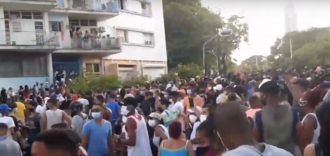
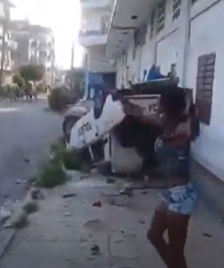
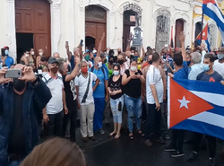
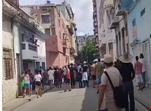
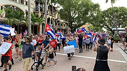

2021 Cuban protests
| 2021 Cuban protests | |||
|---|---|---|---|
| Part of the Cuban dissident movement and protests over responses to the COVID-19 pandemic | |||
 People in Havana on 11 July | |||
| Date | 11 July–15 November 2021 | ||
| Location | |||
| Caused by |
| ||
| Goals |
| ||
| Methods |
| ||
| Result |
| ||
| Concessions | |||
| Parties | |||
| |||
| Lead figures | |||
| Casualties | |||
| Deaths | 1 protester dead[30] (5 according to Cuba Decide)[31] | ||
| Injuries | A few police officers,[32] protesters, and counter-protesters[33] | ||
| Arrested | ~400 (according to Human Rights Watch);[34] more than 500 (according to Cubalex)[35] | ||


A series of protests against the Cuban government and the Communist Party of Cuba began on 11 July 2021, triggered by a shortage of food and medicine and the government's response to the resurgent COVID-19 pandemic in Cuba.[28][36][37] The protests were the largest anti-government demonstrations since the Maleconazo in 1994.[38][39][40] Protesters' motivations included the resentment toward the Cuban government's authoritarianism and curbs on civil liberties, the government's COVID-19 pandemic lockdown rules, and the failure to fulfill their promised economic and political reforms. The poor state of the Cuban economy also called for major protests all over the country. Cuban dissidents have placed the responsibility for these problems on the government's economic policies and abuse of human rights.[9][41]
Many international figures called for dialogue, asking that the Cuban authorities respect the protesters' freedom of assembly and peaceful demonstrations. Protesters abroad called for the United States to provide humanitarian aid to help the citizens. One person was confirmed dead during a clash between protesters and police. The dissident organization of Cuba recorded an estimate of five deaths.
The Cuban government responded to the demonstrations with a crackdown, making hundreds of arrests and charging at least 710 Cubans with crimes, including sedition. Some demonstrators were given lengthy prison sentences in trials. These government acts were criticized by Amnesty International, activists, and families as unfair. As a result of the protests, the Cuban government lifted some import restrictions, and the United States government imposed new sanctions on Cuban officials.
Background
[edit]In 2020, the economic situation in Cuba worsened. The Cuban economy contracted by 10.9% in 2020, and by 2% in the first six months of 2021.[11] The economic crises emerged from a combination of factors,[42][43] including reduced financial support (subsidized fuel) from Cuba's ally Venezuela, the United States embargo against Cuba and United States sanctions (tightened by the Trump administration in 2019),[nb 5] and the effect of the COVID-19 pandemic, which hit the industry of tourism in Cuba and led to a decrease in remittances from Cubans abroad.[11][27] Currency reform, which limited Cuban pesos exchange for United States dollars because the government needed the reform package to finance imports, led to soaring inflation,[45] with rates estimated to be 500%.[46][47] The economic situation has been exacerbated by sanctions,[48] and some observers have blamed inefficiencies of Cuba's Soviet style-centrally planned economy, and a lack of reforms that other Communist states have taken.[3] Pavel Vidal, a former Cuban central bank economist who teaches at Javeriana University in Colombia, stated that reforms in Cuba "do not depend on the embargo, and the embargo should be eliminated unilaterally, independently from reforms in Cuba. Both cause problems."[3] The Cuban government has blamed the crisis on the trade embargo and its tightness as well as the fallout from the COVID-19 pandemic.[3] According to Lillian Guerra, professor of Cuban history at the University of Florida, the food shortages and high prices were the result of government spending money on building hotels and tourists facilities.[49] According to The Guardian, they were the result of United States sanctions and the COVID-19 pandemic.[50]
Deteriorating economic conditions led to reductions in Cubans' standard of living, shortages of food and other basic products,[42][51] a shortage in hard currency,[51] and persistent power outages.[43][52] Promised economic reforms, which according to NBC News' Carmen Sesin were needed and were another cause of discontent alongside the embargo, did not materialize, in part because of the fallout from the COVID-19 pandemic according to the Cuban government.[3] Cuba was not eligible for free COVID-19 vaccines from the COVAX program since it was not considered a low income economy.[53] It decided not to buy vaccines from overseas and instead, developed its own: Soberana 02 and Abdala.[54] The Miami Herald and The Wall Street Journal described the vaccine rollout process as delayed and slow, and said it angered some Cubans and prompted their calls for more vaccines.[40][51] According to international trackers, at the time the protests had broken out, Cuba had administered 64.3 doses per 100 people, the 6th highest rate in Latin America, and about 15% of the Cuban population was fully vaccinated.[43] In 2021, COVID-19 cases began to surge especially in the Matanzas Province, and the situation was further aggravated by the shortage of medicines and food.[55] Cuba responded by deploying more doctors to the province.[40]
For many Cuban-Americans, the protests were fuelled by dissatisfaction with lack of civil liberties, such as freedom of expression,[10] in Cuba's tightly controlled government,[56] which The Washington Post's Anthony Faiola described as "an authoritarian government struggling to cope with increasingly severe blackouts, food shortages and a spiking coronavirus outbreak",[38] with protesters "demanding an end to the 62-year dictatorship" according to The Wall Street Journal.[51] It exerts tight control using its intelligence, police, and security apparatus,[57][58] which has been described by analysts as a police state that has provided intelligence support to allied governments, such as Nicaragua and Venezuela.[59] The government's curbs and clampdowns on Cubans' civil liberties has prompted resentment.[11][12] For Sesin, Cuba has received praise for providing its citizens of important primary care and basic needs, but the government also limits their freedom in several ways, such as controlling food, internet, and wages prices, and having a lack of freedom of assembly, freedom of expression, and multi-party elections. Measures adopted by the government during the COVID-19 pandemic, such as closed borders and no tourism, have also been praised for having reduced the number of COVID-19 infections but were very strict and did not help the economy in such times of crisis.[3]
Increased use of social media also mobilized participants in the demonstrations; internet access in Cuba began to surge in 2008, and 3G mobile phone service came to the island in 2019,[nb 6] leading to widespread adoption.[62][63] Earlier in 2010, USAid contactors began working on ZunZuneo, a Cuban Twitter-like social media network, planning to encourage Cubans to organise "smart mobs" that could "renegotiate the power balance between the state and society", but the project was ended in 2012. The use of VPNs spread, as people have used them "to access anti-Castro news websites blocked by the state, but also to make payments via PayPal, to send files through WeTransfer, or to play Pokémon GO – all services otherwise blocked by US sanctions."[60] Due to the evolving crises, a social media campaign using the hashtags SOSCUBA and SOSMATANZAS was initiated to collect money, medical materials, food, and other supplies to be sent to Cuba.[55] Various international figures such as Don Omar, Ricardo Montaner, Alejandro Sanz, Nicky Jam, J Balvin, Daddy Yankee, Becky G, and Mia Khalifa joined the request.[64] The Cuban government recognized the crisis describing it as "very complex" but rejected a proposed humanitarian corridor and described the campaign as an attempt to misrepresent the situation.[65] The Cuban government set up a bank account to receive aid and said that it was open to receive donations, although the designated account is in a Cuban bank under United States sanctions. According to the Miami Herald, the Cuban government has historically refused or seized aid coming from Cuban exiles.[40][65] During the protests, as the government shut down access to several social media websites, over one million protesters began using the tool Psiphon.[66]
Protests
[edit]11 July
[edit]

On 11 July 2021, at least two demonstrations emerged in San Antonio de los Baños, near Havana, and Palma Soriano, in the province of Santiago de Cuba, singing the song "Patria y Vida" ("Homeland and Life"),[14] which inspired the protests according to Nancy San Martín and Mimi Whitefield.[68] Protests spread to at least 50 cities across the country.[69] The song's name is an inversion of the Cuban Revolution motto Patria o Muerte ("Homeland or Death"). Videos of protesters singing slogans of "Down with Communism" (also shouted by protesters in the United States),[70] "Freedom", and "We are not afraid" were broadcast on social networks, in addition to protesters demanding vaccines and an end to repression, which was aggravated by the economic crisis and the pandemic.[71][72] Opposition media outlets such as Radio y Televisión Martí have published social media videos of protests in Malecón, Havana, Santiago de Cuba, Santa Clara, Ciego de Ávila, Camagüey, Bayamo, Guantánamo, San José de las Lajas, Holguín, and Cárdenas.[73] According to Orlando Gutierrez-Boronat, an exiled dissident of the Assembly of the Cuban Resistance, there were protests in more than fifteen cities and towns in Cuba.[74] Gutiérrez asked the United States government to lead an international intervention to prevent protesters from being "victims of a bloodbath" (baño de sangre).[74][75][76] The San Isidro Movement called on the protesters to march to Malecón.[71] Writing in Slate, Baruch College professor Ted Henken suggested that the Cuban demonstrators' use of the Internet to mobilize and publicize the protests showed "that the Internet can still be a force for democracy",[nb 7] and wrote that "in authoritarian contexts like Cuba, where the government has long since monopolized the mass media and transformed journalism into political propaganda, access to unfiltered channels of information and communication can indeed shift the balance of power in small but powerful ways."[77]


Cuban president and First Secretary of the Communist Party of Cuba Miguel Díaz-Canel said that the United States embargo against Cuba and economic sanctions were responsible for the conditions that led to the unrest.[11][13] He urged government-supporting citizens to take to the streets in counter-protest to respond to the demonstrations,[39][71] saying in a special television broadcast: "The order to fight has been given — into the street, revolutionaries!"[5] The government called the protests counter-revolutionary.[78] Younger Cubans comprised the majority of protesters, while some members of older generations responded to demonstrations, assisting Cuban authorities.[79]
Following Díaz-Canel's statements, about 300 government supporters arrived at El Capitolio; the Miami Herald reported that one Associated Press (AP) cameraman was assaulted by these counter-protesters, while a separate AP photographer was injured by police.[40] AP photographer Ramon Espinosa was detained by authorities as well.[40] San Antonio residents reported that the police repressed protesters and detained certain participants.[80] In videos circulated on social media, people were seen throwing stones at police, while reports of authorities beating demonstrators were heard.[40] By the evening, protests had dissipated.[79]
Cuban journalist Yoani Sánchez reported that after the protests on 11 July some were injured and there were hundreds of detentions.[81][82] José Miguel Vivanco, director of the Human Rights Watch's Americas division, said: "This is pretty massive. My sense is that this is a combination of social unrest based on a lack of freedoms, and covid, and economic conditions. The lack of access to electricity. The blackouts. ... People are screaming for freedom." Cuban journalist Abraham Jiménez Enoa tweeted from Havana: "Cuba is an island ruled by the military for 62 years. Today there is no food, no medicine, and people are dying like flies from Covid. People got tired. This country is losing even fear."[38] The small class of private entrepreneurs in Cuba, such as Nidialys Acosta, said that protests in the middle of a pandemic were not the solution and do not agree with Diaz-Canel inciting the revolutionaries to the streets either. The Washington Post quoted Acosta as saying: "I could not believe the magnitude. People are tired. It has been aggravated in recent weeks by blackouts. There are blackouts of six hours in a row in the countryside."[38]
12 July
[edit]On 12 July, more protests were reported in Cuba.[18][83] Camila Acosta, a journalist from the Spanish newspaper ABC,[84] was arrested.[85][86][87] Internet watchdog NetBlocks reported that social media platforms in Cuba were censored beginning on 12 July 2021, although virtual private networks were able to bypass government blockages[88] and with a police presence in the streets of Havana. Dozens of women gathered in front of police stations to inquire about the whereabouts of their husbands, children and relatives arrested or disappeared during the events of the previous day.[89][90][91] Faced with the accusations of missing persons, Díaz-Canel stated: "They have already come up with the fact that in Cuba we repress, we murder. Where are the Cuban murders? Where is the Cuban repression? Where are the disappeared in Cuba?"[92]


A meeting of the top leadership of the Communist Party of Cuba including former First Secretary Raúl Castro was held where the issue of the protests was addressed, releasing a statement that "the provocations orchestrated by counterrevolutionary elements, organized and financed from the United States with destabilizing purposes, were analyzed."[93] Díaz-Canel accused the United States of using a policy of "economic asphyxiation [to] cause social unrest" in Cuba.[94] Foreign Minister Bruno Rodríguez Parrilla labeled the protesters as vandals.[95] Authorities blocked access to social media platforms such as WhatsApp, Telegram, Facebook, and Instagram.[96]
Some Cuban exiles and Florida politicians have called for military United States foreign intervention.[16][97][98][99][100][101] Miami mayor Francis Suarez stated the United States should consider air strikes against Cuba.[102] Some international politicians and abroad Cubans blamed the United States embargo against Cuba.[103] The Cuban government blamed the protests on United States interference and "U.S.-financed 'counter-revolutionaries' exploiting hardship caused by the decades-old U.S. trade embargo that Washington tightened in the midst of the pandemic, pushing the Cuban economy to the brink."[2][104]
13 July
[edit]Cuba's Ministry of Interior stated that it "mourns the death" of a 36-year-old man named as Diubis Laurencio Tejeda, who had taken part in the protests.[33] Diubis' mother committed suicide few days later after his death.[105] The Cuban dissident organization Cuba Decide estimated a toll of five deaths during the protests.[31]
During a live interview with the Spanish television program Todo es mentira, Cuban YouTuber and activist Dina Stars was detained by Cuban security officers.[106][107][108] She was later released after being accused of promoting protests in Cuba and stated that "they didn't torture me or kidnap me."[109] In Miami, Florida, protesters temporarily blocked the Palmetto Expressway in both directions in order to show support for the Cuban protesters.[110] Some newspapers reported that the protesters were in violation of a Florida anti-riot law;[111] however, none of the protesters have been charged, and Governor of Florida Ron DeSantis said he did not think the law applied.[112][113][114]
In response to protesters tired of hardship and wanting change, former Cuban central bank economist Pavel Vidal stated: "There is a lack of credibility over the promised reforms. ... It's not just the economic crisis. People don't have hope in getting out of the crisis in a definitive way." The United States State Department said that it was willing to provide humanitarian aid, as it did in early 2021 by sending to Cuba chicken food worth $123 million.[3]
14 July
[edit]Cuba's Ministry of Interior confirmed one dead and reported several injuries to citizens, including some officers.[115][116] The web page CiberCuba released a video where allegedly a black beret-wearing group, the Cuban police, break into the house of a demonstrator and fire at him immediately in front of his wife and children, detaining him afterwards.[117] According to the organization of lawyers Cubalex, over 200 people have been detained and many remain in detention as of 15 July.[118][119] Deputy Minister of the Interior Jesús Manuel Burón Tabit questioned decision-making within the ministry and the Security Council as well as what he called the excessive use of police force to repress the demonstrations;[120] the Cuban government denied that he resigned after his statements.[121]
In order to deal with the shortages, the Cuban Chamber of Commerce lifted customs restrictions that limited imports of hygiene products, medicine and food, which one of the protesters demanded the government should do. Travelers would be allowed to bring these products into Cuba between 19 July and 31 December 2021 without being subject to customs duties.[122] In addition, directors of state-owned enterprises would be given the authority to determine their employees' salaries, while small- and medium-sized privately owned businesses would be able to be organized.[7] The government announced that it would be improving on the electricity system, of which problems ETECSA did not provide explanation until Foreign Minister Bruno Rodríguez Parrilla attribute them to power outages and difficulties with food or transportation.[123] Cuban official Carlos Fernandez de Cossio told the MSNBC that the government did not interrupt Internet service as a whole and that interruptions were sporadic, or limited to specific services.[124]
Access to internet in Cuba was partially restored, although with an unstable network of intermittent functionality, while access to social media and instant messaging applications remained blocked.[125] According to Ted Henken, who has written on the topic in works such as Cuba's Digital Revolution (2021), the decision to shut down internet access in Cuba, even if temporary, could prove "very expensive" for both education in Cuba and the Cuban economy. Henken told The Guardian: "It's a cost that cannot be borne for more than a few days."[60]
The Cuban government shut off the internet making it impossible for pictures and videos of the protests and violence against protesters to be shared on social media.[126]
15 July
[edit]Díaz-Canel stated that there are three kinds of protesters: counter-revolutionaries, criminals, and those with legitimate frustrations.[2] Earlier on 12 July, as reported by Reuters, Díaz-Canel said that "many protesters were sincere but manipulated by U.S.-orchestrated social media campaigns and 'mercenaries' on the ground, and warned that further 'provocations' would not be tolerated, calling on supporters to confront 'provocations.'"[127] In a national address on 14 July, Díaz-Canel called on Cubans not to "act with hate" but also admitted some failures by the government, explaining: "We have to gain experience from the disturbances. We also have to carry out a critical analysis of our problems in order to act and overcome, and avoid their repetition."[8]
Cuba's Foreign Affairs Minister Bruno Rodríguez Parrilla claimed to have "irrefutable proof that the majority of those that took part in this (internet) campaign were in the United States and used automated systems to make content go viral, without being penalized by Twitter", which analysts spoken to by Agence France-Presse (AFP) said was "at best an exaggeration" in an article published on 16 July.[128]
17 July
[edit]In response to the anti-government protests during the previous days, there was a government-organized demonstration, which was attended by tens of thousands of supporters;[7] the Cuban government reported a turnout of about 100,000 people.[129] Díaz-Canel and Raúl Castro were present and held speeches.[130] In his speech during the rally, Díaz-Canel reiterated that most of blame for the unrest rested on the United States and the embargo, which he described as "the blockade, aggression and terror", as well as the impact of and fallout from the COVID-19 pandemic and a social network campaign allegedly spread by dissident Cuban-American groups. Later in the day, Díaz-Canel acknowledged some responsibilities on the government's part. About the protesters, Díaz-Canel was quoted as saying that "there were four sectors involved in the protests: radical supporters of the United States who waved that country's flag during the protests and demanded military intervention, criminals who took advantage of the situation to loot, people genuinely desperate due to the impact of the crisis on their daily lives and young people who felt disenfranchised."[7]
In response to some concessions by the government, José Jasan Nieves, director of the online newspaper El Toque, stated: "The Cuban government has just shown that it could have allowed the entry of food and medicine without quantity limits or tariffs all along but chose not to do so for more than a year of the pandemic." According to Cuban economist Omar Everleny Pérez, the concessions, such as "permits for private entrepreneurs to import goods without going through the state and allowing foreign companies to install retail markets or raising the ceiling for agricultural prices in order to increase supply", were welcome but more was needed. Everleny Pérez stated: "Without affecting the ideology, there is a lot of space in which the state can take action." Observers such William M. LeoGrande stated that there were many difficulties for Cuba, with LeoGrande in particular stating: "I think the government is just trying to signal to people that it understands their desperation and that it's going to try to alleviate some of the misery that they're experiencing. The problem is that the government just doesn't have much in the way of resources that it can devote to doing that."[7]
24 July
[edit]A group of Cuban exiles approached Havana by sea in private floats, and launched flare lights and fireworks that were visible from land as a signal of support to the protests, creating expectation among Cuban citizens who watched, recorded, and shared the images through social media. The Cuban government immediately militarized the coast of Havana, including El Malecón.[131]
28 July
[edit]The crackdown on the protests was followed by a heavy militarization of the streets and massive detentions.[132] According to human rights organizations, an estimated 700 people were held by the government by the end of July 2021. According to Cuban government officials, "all investigations and detentions stemming from the July 11 protests — which included looting, attacks on police officers and acts of vandalism — have been conducted lawfully." Independent journalist Maykel Gonzales, who witnessed the detention and mistreatment of a group of protesters by civilian-dressed police officers, told to The New York Times: "[Authorities'] intent was to punish, to do harm."[133]
10 August
[edit]During a talk in Cuban television's informative Mesa Redonda, the prime minister Manuel Marrero said: "[Cienfuegos] province is the same as the others with the lack of antigen tests, the lack of medicines, the same objective problems. But there are more complaints of subjective problems than objective. When you add up the lack of medicines, this, that and the other, they're lower than the number of complaints and reports of abuse, neglect, lack of visits. That's incredible."[134] Marrero's comments were criticized by medical personnel on social media.[135][136] Critics also complained on dealing with outnumbered health centers lacking adequate equipment, medicine, and sanitation; some invited the minister himself to treat the patients personally as physicians do.[137] One of the doctors who complained about Cuba's pandemic response had a picture of "Patria y Vida" on his Facebook profile.[138]
17 August
[edit]The Cuban press published the enactment of the newly approved Decree–Law 35,[139][140] which considers as crime the "divulgation of fake news," "offensive messages," and "diffamation against the country's prestige," among other complementary laws that introduce 17 new felonies, cataloguing "cybersecurity crimes" and their "levels of dangerosity."[141] Díaz-Canel wrote via his official Twitter account: "Our Decree 35 goes against misinformation and the cyber-lie [sic]."[142] The announcement caused outrage among Cuban citizens, many of which argued that it greatly limits their freedom of expression on the Internet and social media even further. Cuban analysts have compared the measure to the totalitarianism described in George Orwell's 1984.[22][143][144]
15 November
[edit]More protests were to take place with the help of Yunior Garcia, a Cuban playwright who has been a leader as of recently in these protests. However, Garcia was found to have fled the country to Spain in fear of being imprisoned. Garcia believes he was not stopped because officials wanted him out of the country. There have been mixed reactions to his fleeing and some commentators said they feel betrayed that he had left.[145]
Arrests and prosecutions
[edit]The Cuban government responded to the demonstrations with a crackdown, making hundreds of arrests and charging at least 710 Cubans with crimes, including sedition, vandalism, theft, and public disorder.[146] Amnesty International criticized the government for making arbitrary arrests en masse; noting that the demonstrators were largely peaceful, Amnesty wrote that "the authorities' default approach has been to criminalize nearly all those who participated in the protests, including some children."[147] Amnesty named six detained Cubans as prisoners of conscience.[147] Lizandra Góngora received a 14 year prison sentence for participating in a protest in Güira de Melena, marking the longest sentence given to a woman protester.[148]
Human rights groups condemned the trials of demonstrators as lacking fairness.[146] Cuba does not have freedom of assembly; unauthorized public gatherings are illegal.[146] The government acknowledged for the first time that trials had occurred in January 2022, when the public prosecutor's office said 172 people had already been tried and convicted.[146] Human rights group Justicia 11J said in January 2022 that sentences for demonstrators had ranged from four to 30 years in jail.[146]
According to the Miami Herald, various young protesters, including minors, were arrested by Cuban authorities and subjected to summary trials under the accusation of "public disorder." Cuban lawyer Laritza Diversent told the Miami Herald that summary trials in Cuba have been "an express procedure for minor crimes" since 1959. She added that "there is almost no documentation of the whole process, making any appeal difficult. It is very arbitrary." The Miami Herald also quoted a Cuban visual artist researching the protests as saying: "The fact that they are charging people with public disorder shows they were just peaceful protesters and did not commit any crimes."[149]
Disappeared persons
[edit]According to a report by the Spanish NGO Prisoners Defenders, more than 178 persons have disappeared during the protests in Cuba, and have not had "contact with their relatives and for whom no document on their location exists." The alleged missing people include dissident and Patriotic Union of Cuba executive secretary José Daniel Ferrer, dissident rap singer Luis Manuel Otero, and dissident and human rights activist Guillermo Fariñas.[150] The report mentioned journalist Camila Acosta, who was covering the protests for the Spanish newspaper ABC; however, she was put under house arrest[151] and published a report on the 25 July describing her experiences.[152] The San Isidro Movement stated that Ferrer was moved to a high-security prison,[153] same as Otero.[154] The UN Working Group on Enforced or Involuntary Disappearances has forwarded a request to the Permanent Representative of Cuba to the United Nations to take action regarding the disappearances.[150]
Analysis
[edit]Writing for the Associated Press at the height of the protests on 14 July 2021, Andrea Rodríguez summarized that many protesters "expressed anger over long lines and shortages of food and medicines, as well as repeated electricity outages. Some demanded a faster pace of vaccination against COVID-19. But there were also calls for political change in a country governed by the Communist Party for some six decades." Cuban authorities have stated that the United States government and its alleged enemies were organizing the protests through social networks, such as Twitter, and blamed most of the hardships on United States sanctions, which are believed to have costed at least $5.5 billion in 2020; the estimate is disputed by Cuba's critics, who also blame the government's failure to reform the state-run economy. Cuba's tourism industry, which is an important source of income, has been wrecked by the COVID-19 pandemic in Cuba, while foreign aid from allies such as Venezuela declined as a result of the crisis in Venezuela, which was further exacerbated by the pandemic in the country. Cuban officials appeared on state television to analyze the events, and Cuban leader Miguel Díaz-Canel went to talk to citizens.[155]
Al Jazeera mentioned "frustration with rising prices, falling wages, the United States embargo and the failings of the island's long-standing communist government to address its economic challenges."[4] The Associated Press, the BBC, the Financial Times,[47] The Guardian, The New York Times, and Reuters also mentioned the United States embargo against Cuba and the impact that Donald Trump's tighter sanctions had on Cuba,[156] which the BBC described as having hit hard on Cuba.[5] According to The New York Times, the embargo "cuts off its access to financing and imports",[37] while remittances to Cuba "are believed to be around $2 billion to $3 billion annually, representing its third biggest source of dollars after the services industry and tourism", and the United States "may ease ban on remittances as part of Cuba review" according to Reuters.[157] Sanctions exacerbated the economic crisis, alongside inefficiencies[16] and "Soviet-style one-party rule" (which Reuters attributed to its detractors),[127] the COVID-19 pandemic,[127] and the collapse of tourism,[158] and "choked the economy" in the Financial Times's words.[159] According to The Guardian, sanctions and the COVID-19 pandemic led to food shortages and high prices, "sparking one of the biggest such demonstrations in memory",[50] which were also caused by social media and "a younger generation hungry for higher living standards."[160]
As reported by Reuters on 4 August 2021, the anti-government protests were expected to damage the Cuban struggling economy but could speed up economic reforms, as relations with the United States deteriorated further, when United States president Joseph Biden branded Cuba a failed state and sanctioned their military and police forces, ending hopes of a return to the era of detente that begun under former president Barack Obama;[nb 8] according to experts, the protests may quicken the pace of reform, such as "several tweaks to the state-dominated and centralized economy" and "long-awaited regulations giving legal status to existing and future small and medium-sized businesses."[52] Omar Everleny, a Cuban economist and former University of Havana professor, stated: "The negative result of the protests on July 11 is that hopes the Biden administration would lift at least the Trump-era sanctions were dashed. The positive is that it signals we have to do what we have to do in terms of improving the economy without waiting for the United States." Foreign executives expressed their worry that the anti-government protests, which tarnished the image of Cuba as a stable country, would make it even more difficult to work with Cuba.[52]
By August 2021, observers saw the protests as being mainly caused by the global COVID-19 pandemic, and compared them to other protests over responses to the COVID-19 pandemic in the Caribbean and Latin America. The Guardian stated that some protesters "were marching against systems of different stripes: Jair Bolsonaro's far-right administration in Brazil and the communist dictatorship of Cuba. But both were expressions of what many suspect is a new wave of Covid-fuelled social and political turbulence that is starting to sweep the region in response to the ravages of a pandemic that has officially killed nearly 1.4 million people in Latin America and the Caribbean."[161]
Misinformation
[edit]The Cuban government claimed that western countries including the United States, was responsible for the protests.[162] This misinformation was used by the government to demonize protesters during the government's crackdown, as justification by the Cuban president for force to be used by government supporters against demonstrators and excessive prison sentences for protesters.[163]
Some media, activist groups[164] and pro-regime conspiracy websites such as The Grayzone echoed the Cuban government's conspiracy theories[165] during its response to the protests.[166] Stories were published amplifying the Cuban state media narrative blaming the US, and downplaying support for the opposition in Cuba and the size of the protests.[167] News organizations such as CNN claimed the scope of the demonstrations, calling them the "biggest since the revolution".[168] The Cuban government suppressed photographers and journalists reporting on the event,[169] and shut off the internet making it impossible for pictures and videos of the protests and violence against protesters to be shared on social media.[126] Limiting pictures and videos of the demonstrations that were being disputed by media sympathetic to the Cuban government.[170]
PolitiFact published an article stating that "amid news surrounding protests in Cuba, a widely shared Facebook post asserts U.S. sanctions on Cuba restrict the country from trading with other countries, too". PolitiFact determined the post was "False" on its Truth-O-Meter. In their determination, PolitiFact stated that "experts and evidence shows that Cuba can and has traded with other countries. While the nuances in the U.S. embargo can make it difficult for foreign companies to trade with Cuba, there is no evidence that they can't" [171]
USA Today additionally rated the post as "False". In summation, USA Today added that "the claim that the U.S. "blockade" of Cuba means the island nation can't trade with any country or company is FALSE, based on our research. The embargo prevents most American companies from doing business with Cuba and vice versa. Although the embargo creates disincentives for other countries and companies to trade with Cuba, it does not compel them to cut economic ties with the island nation. Many countries, as well as some American companies, do business in Cuba".[172]
Media outlets such as El País, the Financial Times, Fox News, La Nación, The New York Times, RTVE, La Sexta, Voice of America, and The Washington Times,[173][174] published photos of a pro-government protest which they erroneously captioned as a photo as an anti-government one.[128] CNN published an image of a Miami demonstration in a story about demonstrations in Cuba, while only The Guardian amended a 12 July 2021 article[175] because the original caption on the image of people on the Máximo Gómez monument described them as anti-government protesters, when they were in fact protesters in support of the government. As reported by The Express Tribune, journalists Ben Norton and Alan MacLeod were among the first to note the error, and MacLeod suggested they may have simply copied and pasted the Associated Press's original photo caption, replicating the error across multiple news outlets.[173]
Cuban political scientist Harold Cardenas stated that "it would be a simplification to say it's a US campaign because there are obviously many other reasons behind the protests. ... I know communists that were detained the other day for taking part in protests. That's not to say that the United States has no responsibility in the unrest [through its sanctions that] intentionally asphyxiate the Cuban people." Cardenas added that social networks have been "used to create parallel realities", specifically mentioning misinformation and fake images which were widely shared in the country during the anti-government protests, and "[t]here has been an effort from abroad to create uncertainty in the country", but criticized the Cuban government for "attributing an exaggerated importance to Twitter", as people were genuinely "fed up and economically exhausted." Macias Tovar agreed with Cardenas' views, stating: "Beyond this being a campaign orchestrated [from abroad] there are people who are mobilizing, people who are demonstrating against the government, people who have petitions [—] what the Cuban government must do is respect the right to protest."[128]
Reactions
[edit]Cubans and Cuban-Americans
[edit]The Cuban government mainly blamed the unrest on the United States and the embargo,[176] whose sanctions "have restricted trade with Cuba since 1962" and "were tightened under former US President Donald Trump" in 2019, as stated by the BBC.[177] Cuban officials stated that online propaganda, coupled with scarcity created by sanctions, amounted to a "destabilisation campaign", and Carlos Fernandez de Cossio, head of United States affairs at the Cuban foreign ministry, stated that the internet is now "being used as part of warfare against Cuba";[60] the government also acknowledged faults on its part.[7][8]
On 14 July 2021, the BBC reported that on the government news website Cubadebate several readers "laid the blame for the crisis on US sanctions, which have contributed to the island's dire economic situation and shortages." One reader said: "The only help that Cuba needs to ask for is for them [the US] to take away the blockade [sanctions]." Another reader was quoted as saying: "I just want to point out that the indiscipline and the lack of responsibility and oversight is not the fault of the blockade or the Yankees. It is ours alone."[178] Some Cuban-Americans expressed their belief that shortages does not explain protests and that they were mainly about freedom. As reported by NBC News, "while conservatives and Republicans are known for a more hard-line stance against Cuba, some progressives have been denouncing the Cuban government's tough stance against activists' calls for greater freedom of expression."[10] In 2013, a Cuban dissident uncovered Operation Truth, a secret state program described by the dissident as "enlisting students to attack those criticizing the government online" according to The Guardian; some dissident journalists reportedly received hate messages on social networks.[60]
Protests abroad
[edit]Cubans residing in Chile marched to the Cuban consulate in Santiago in support of the protests.[179] Protests in Miami urging the United States to provide aid for the protests in Cuba have taken place.[180] Demonstrations also took place at the Puerta del Sol in Madrid, Spain.[73][181] In Buenos Aires, Argentina, a protest took place in front of the Cuban embassy in Buenos Aires with protesters holding placards with the phrases Patria y vida and others with the slogan S.O.S. Cuba.[182] In São Paulo, Brazil, political parties and social movements staged a protest in favor of the Cuban government and "in defense of sovereignty" in front of the Consulate General of Cuba.[183] A Change.org petition calling for the United States government to invade Cuba, started by a Belgian citizen, gained nearly 500,000 signatures by 21 July.[16]

On 13 July 2021, a protest march was held starting at 6 pm between North Bergen, New Jersey, and West New York. The march would go along Bergenline Avenue, starting at 79th Street in North Bergen and ending at 60th Street in West New York. Northern Hudson County, New Jersey, has a sizable Cuban American population in it.[184] About 300–400 people would attend a protest march in Las Vegas, Nevada, marching along the Las Vegas Strip that night.[185]


Three people were arrested in Tampa, Florida, during a demonstration in support of the protests on the evening of 13 July 2021. Two of those were arrested under Florida's recently passed anti-riot law, the Combating Public Disorder Act. All three were charged with resisting without violence, while two were charged under battery on a law enforcement officer.[186] A Florida Highway Patrol trooper would be injured while trying to assist police officers in an arrest in Tampa during the protest there.[187] In Orlando, an arrest was made during a protest that night. A crowd of about 500 people would gather near the intersection of Semoran Boulevard and Curry Ford Road. The crowd would eventually end spilling into the street blocking southbound traffic and once the crowd went into the street, the Orlando Police Department would ask them to disperse for 15 minutes in English and Spanish. A man was arrested after refusing to move off the street as he was sitting there when he was asked by the police.[188]
A group of Cuban exiles showed intention to sail into Cuba with supplies in order to support the protests. The United States Navy issued a statement asking Cubans to not cross the Straits of Florida in unauthorized vessels, recalling the deaths of 20 Cubans trying to cross the straits in recent weeks before that date: "The Coast Guard along with our local, state and federal partners are monitoring any activity ..., including unpermitted vessel departures from Florida to Cuba."[189]
On 14 July 2021, a protest march was held in Philadelphia, and was organized by a Facebook group named Cubanos en Philadelphia, going from the Philadelphia Museum of Art to the Philadelphia City Hall that day.[190] On 15 July 2021, a small group of Florida State University students with the Cuban-American Student Association gathered at the Florida State Capitol in solidarity with the demonstrators.[191] On 16 July 2021, protesters scrawled Cuba Libre ("Free Cuba") on the street outside the Embassy of Cuba in Washington, D.C.[192] In Miami, "a few dozen" would march for about two miles along Eight Street.[193] Protests in Florida outside of Miami would be seen that day in Fort Myers, Florida, with protesters walking along the Fort Myers Music Walk located in the city's downtown area.[194]
On 13–16 July 2021, demonstrations of Cuban exiles occurred in Downtown Halifax, Canada. Protesters wore signs in support of those in Cuba, some of them calling for an international military intervention in the island nation. Protesters also chanted the song "Patria y Vida" ("Homeland and Life"). One protester told the local press: "Tell the world that we are fighting for our freedom."[195] At the base of the Freedom Tower in Miami, there would be protests on 17 July 2021. Several thousand were believed to have attended with the protest starting the afternoon and going into the evening; it ended when the Freedom Tower was illuminated in the colors of the Cuban flag.[196] The same Facebook group that organized the 14 July protest march in Philadelphia also organized another protest outside the Philadelphia Museum of Art on July 18, 2021, drawing 200 participants.[190]
Governments
[edit]- Antigua and Barbuda's Ambassador to the United States Ronald Sanders criticized the behavior of the United States in not normalizing the relations between the two countries. In an opinion piece, he blamed the United States for the lack of all kind of freedom in Cuba and called for an end to the United States embargo against Cuba.[197]
- Argentina's President Alberto Fernández said that he could not say exactly what was happening in Cuba but supported the end of the embargo.[198]
- Barbados's Foreign Affairs Minister Jerome Walcott called for an end to the embargo, labeling it as an "unjustified punishment on Cubans" that was isolating Cuba from the international community.[199]
- Bolivia's President Luis Arce expressed his support for the Cuban people who "fight against destabilizing actions."[200] Former President Evo Morales accused the United States of launching a new Operation Condor.[201]
 Brazil's President Jair Bolsonaro commented that it was a sad day for Cuba because people requested freedom and received shots, attacks, and prison instead. He said that there were people in Brazil who support Cuba, Venezuela, and "those kinds of people."[202]
Brazil's President Jair Bolsonaro commented that it was a sad day for Cuba because people requested freedom and received shots, attacks, and prison instead. He said that there were people in Brazil who support Cuba, Venezuela, and "those kinds of people."[202]- Canada said it "supports the right to freedom of expression and assembly and calls on all parties to uphold this fundamental right." Global Affairs Canada said that all sides should "exercise restraint" and "engage in peaceful and inclusive dialogue."[203]
 Chile's Ministry of Foreign Affairs issued a statement condemning the repression in order "to silence protesters who peacefully claim greater freedom, better health system and better quality of life." It also added that "freedom of expression and peaceful assembly must be guaranteed."[204]
Chile's Ministry of Foreign Affairs issued a statement condemning the repression in order "to silence protesters who peacefully claim greater freedom, better health system and better quality of life." It also added that "freedom of expression and peaceful assembly must be guaranteed."[204] China's Foreign Ministry Spokesman Zhao Lijian called for the lifting of the United States embargo on Cuba, which he said was responsible for shortage of medicine and energy in the country.[205]
China's Foreign Ministry Spokesman Zhao Lijian called for the lifting of the United States embargo on Cuba, which he said was responsible for shortage of medicine and energy in the country.[205]- Ecuador's President Guillermo Lasso called on the Cuban government to "start a democratic process to put an end to this situation."[206]
- Mexico's President Andrés Manuel López Obrador said: "I want to express my solidarity with the Cuban people. I believe that a solution must be found through dialogue without the use of force, without confrontation, without violence. And it has to be Cubans who decide because Cuba is a free country, independent and sovereign. There must not be interventionism, and the health situation of the Cuban people must not be used with political purposes."[207] López Obrador offered Mexico's help with food and vaccines, and said that the best way to help Cuba is to end the United States blockade.[208]
- Nicaragua's President Daniel Ortega sent his expressions of support to Miguel Díaz-Canel, condemning the "permanent blockade, destabilization and aggression" against Cuba.[209][210]
- North Korea's Ministry of Foreign Affairs stated through its spokesperson that "the anti-government protests that occurred in Cuba are an outcome of behind-the-scene manipulation by the outside forces coupled with their persistent anti-Cuba blockade scheming to obliterate socialism and the revolution", and expressed its support of the Cuban government.[211]
- Peru's Interim President Francisco Sagasti supported the protesters to "express freely and peacefully" and invoked the Cuban authorities to "consider their requirements in a democratic spirit."[212]
- Russia's Ministry of Foreign Affairs stated through its spokesperson Maria Zakharova that it is "unacceptable for there to be outside interference in the internal affairs of a sovereign state or any destructive actions that would encourage the destabilization of the situation on the island."[213]
- Saint Vincent and the Grenadines's Prime Minister Ralph Gonsalves issued a statement in support of the Cuban government.[214]
 Spain's Ministry of Foreign Affairs released a statement recognizing the right of Cubans "to demonstrate freely and peacefully" and that "forms of aid that could alleviate the situation" will be studied.[215] In Spain, the Cuban protests provoked debate and political controversy, as Spanish right-wing politicians demanded a more serious condemnation of the Cuban government from the Spanish authorities, that the Spanish government qualify it as a dictatorship, and that Spain make the European Union adopt an active opposition policy towards it. When asked if Cuba was a dictatorship, left-wing Prime Minister Pedro Sánchez responded: "It is evident that Cuba is not a democracy. That said, it has to be Cuban society that finds that path (of prosperity) and the international community that helps it find that path." These acts from right-wing politicians have received criticism, being accused of using the protests as an opposition tactic against Sánchez-led left-wing government. The lack of similar harsh condemnation by the political right against events in other countries, such as the 2021 Colombian protests, human rights in Qatar and Saudi Arabia, and Abdel Fattah el-Sisi's repression in Egypt, was also criticized.[216]
Spain's Ministry of Foreign Affairs released a statement recognizing the right of Cubans "to demonstrate freely and peacefully" and that "forms of aid that could alleviate the situation" will be studied.[215] In Spain, the Cuban protests provoked debate and political controversy, as Spanish right-wing politicians demanded a more serious condemnation of the Cuban government from the Spanish authorities, that the Spanish government qualify it as a dictatorship, and that Spain make the European Union adopt an active opposition policy towards it. When asked if Cuba was a dictatorship, left-wing Prime Minister Pedro Sánchez responded: "It is evident that Cuba is not a democracy. That said, it has to be Cuban society that finds that path (of prosperity) and the international community that helps it find that path." These acts from right-wing politicians have received criticism, being accused of using the protests as an opposition tactic against Sánchez-led left-wing government. The lack of similar harsh condemnation by the political right against events in other countries, such as the 2021 Colombian protests, human rights in Qatar and Saudi Arabia, and Abdel Fattah el-Sisi's repression in Egypt, was also criticized.[216] United States' President Joe Biden called on the Cuban government to listen to the protesters,[159] and stated that he supports the Cuban people and their "clarion call for freedom and relief."[217][218] Julie J. Chung, Acting Assistant Secretary for the Bureau of Western Hemisphere Affairs for the United States Department of State, stated: "We are deeply concerned by 'calls to combat' in Cuba. We stand by the Cuban people's right for peaceful assembly. We call for calm and condemn any violence."[40] On 12 July, the White House Press Secretary Jen Psaki told reporters: "A Cuba policy shift is not currently among President Biden's top priorities."[219] On 22 July, the United States Department of the Treasury announced new sanctions on Cuba, targeting a top Cuban military official and the special police unit Black Wasp, accusing the government of human rights violations, repression, and violence against peaceful protesters.[220] On 30 July, additional sanctions were placed on Cuba's National Revolutionary Police and its directors.[221]
United States' President Joe Biden called on the Cuban government to listen to the protesters,[159] and stated that he supports the Cuban people and their "clarion call for freedom and relief."[217][218] Julie J. Chung, Acting Assistant Secretary for the Bureau of Western Hemisphere Affairs for the United States Department of State, stated: "We are deeply concerned by 'calls to combat' in Cuba. We stand by the Cuban people's right for peaceful assembly. We call for calm and condemn any violence."[40] On 12 July, the White House Press Secretary Jen Psaki told reporters: "A Cuba policy shift is not currently among President Biden's top priorities."[219] On 22 July, the United States Department of the Treasury announced new sanctions on Cuba, targeting a top Cuban military official and the special police unit Black Wasp, accusing the government of human rights violations, repression, and violence against peaceful protesters.[220] On 30 July, additional sanctions were placed on Cuba's National Revolutionary Police and its directors.[221]- Uruguay's President Luis Lacalle Pou expressed his support for the opposition protesters, saying they had "commendable courage."[222]
- Venezuela's President Nicolás Maduro expressed "all the support to the Cuban revolutionary government" on a phone call to Díaz-Canel.[223]
- Vietnam urged the United States to "take concrete steps in the direction of normalizing relations with Cuba for the benefit of the two peoples, contributing to peace, stability and development in the region and the world."[224]
Supranational organizations
[edit]- European Union's Foreign Relations Chief Josep Borrell said that "the Cuban people have a right to express their opinion" and that he would "personally call on the government there to allow peaceful demonstrations and to listen to the voice of discontent from demonstrators."[225]
- Organization of American States' Secretary General Luis Almagro condemned the "Cuban dictatorial regime for calling on civilians to repress and confronting those who exercise their rights to protest."[226]
 United Nations' High Commissioner for Human Rights Michelle Bachelet called for the urgent release of those detained for "exercising their right to freedom of peaceful assembly, opinion and expression" in the protests.[227]
United Nations' High Commissioner for Human Rights Michelle Bachelet called for the urgent release of those detained for "exercising their right to freedom of peaceful assembly, opinion and expression" in the protests.[227]
Human rights groups
[edit]- Erika Guevara Rosas, director of Amnesty International for the Americas, said that "Amnesty International received with alarm reports of internet blackouts, arbitrary arrests, excessive use of force – including police firing on demonstrators – and reports that there is a long list of missing persons."[104][228] Amnesty International called on the government of Díaz-Canel to respect the right of peaceful assembly.[71]
Others
[edit]- International Socialist Tendency created a petition demanding the release of Cuban Marxist Frank García Hernández and his friends, who were arrested for partaking in the protests. The petition ends with a demand for "democratic rights" for Cubans, and statements from Rosa Luxemburg highlighting the need for a free press. The petition was signed by Noam Chomsky, Gayatri Chakravorty Spivak, Paul Le Blanc, and various other prominent academics.[229][230]
- The Black Lives Matter Global Network released a statement calling for the United States government to lift its embargo on Cuba and praised the Cuban government for its "solidarity with oppressed peoples of African descent", adding "The people of Cuba are being punished by the U.S. government because the country has maintained its commitment to sovereignty and self-determination". BLMGN also claimed that the protests were caused by the "U.S. federal government's inhumane treatments of Cubans." BLMGN's apparent praise of the Cuban government received criticism due to the Cuban government's history of systemic racism and for ignoring the issues raised by Cuban protesters. In an email to NBC News, BLMGN officials said that their statement was "grounded in our unequivocal support for Cuba" and that they sought to amplify the voices of Afro-Cubans protesting oppression "from all actors, including the United States Embargo." The officials also said that "We unequivocally join in solidarity with the Cuban people against repression and violence from internal and unseen external actors" and that "We also understand that Anti-Blackness exists within Cuba and is a Global issue. We struggle for and alongside Black people across the diaspora for liberation and self-sovereignty."[231][232]
- Mayor of Miami Francis Suarez, a Cuban American, stated it was time for a United States-led international intervention in Cuba, saying: "We are asking the federal government to do everything possible and not waste this moment."[40] Senator from Tennessee Marsha Blackburn stated that she was in support of the protests and protesters who wanted to end "the ravages of socialism in Cuba", and asked for President Joe Biden to support the protesters.[233] She also accused Black Lives Matter and the Democratic Socialists of America of supporting the Communist regime.[234]
- Republican Senator from Florida Marco Rubio demanded President Biden to call on Cuba's military to support protesters, while Democratic Senator from New Jersey Bob Menendez said the United States should "stand in solidarity with the brave people of Cuba that are risking their lives today for change in their country and a future of Patria y Vida."[40] Democratic Senator from Connecticut Chris Murphy argued that the embargo against Cuba had not worked and empowered the Cuban government.[235]
- Venezuelan opposition leader Juan Guaidó declared that "the desire for change, freedom and the demand for fundamental rights are irrepressible forces. From Venezuela, we reiterate our support for the entire pro-democracy movement in Cuba."[236]
- Mauricio Macri, former president of Argentina, distanced himself from President Fernández and gave his full support to the demonstrators, saying: "I want to support the Cuban people in the streets requesting the end of the dictatorship and an improvement of their life conditions. Let them know that all the people in the continent and the world who share the value of liberty are with them." Similar messages were delivered by Horacio Rodríguez Larreta, mayor of Buenos Aires, and María Eugenia Vidal, former governor of the Buenos Aires Province. Macri also signed a letter of the Democratic Initiative of Spain and the Americas, alongside other former presidents.[237]
- Luiz Inácio Lula da Silva, former Brazilian president, said during a candidacy for president event next year in Brazil that if Cuba did not have a blockade by the United States, the country "could be the Netherlands", and said that the blockade was a form of "killing human beings without being at war."[238]
- The far-right Serbian Radical Party accused the United States of trying to "provoke a coup in Cuba and forcibly overthrow President Miguel Díaz-Canel", while adding that Serbia should be included in sending humanitarian aid to Cuba, considering that "Cuba is a friendly state that has not recognized the self-proclaimed independence of the so-called Kosovo."[239]
- Expressing support for the protesters, Representative from New York Alexandria Ocasio-Cortez condemned the "anti-democratic actions" of the government of President Miguel Díaz-Canel, saying: "The suppression of media, speech and protest are all gross violations of civil rights." She also called on the Biden administration to end the embargo, stating: "The embargo is absurdly cruel and, like too many other U.S. policies targeting Latin Americans, the cruelty is the point. I outright reject the Biden administration's defense of the embargo."[240] Senator Bernie Sanders had earlier expressed similar thoughts.[241]
- During the police crackdown on Cuban protesters, the Black Lives Matter Global Network Foundation praised Cuba for its asylum of the American activist and escaped prisoner Assata Shakur and also praised Cuba for supporting Communist movements and governments.[242][243]
- Pope Francis called for peace and dialogue in Cuba, stating: "I am also close to the dear people of Cuba in these difficult times."[244]
- The St. Petersburg, Florida, city council passed a unanimous resolution on 22 July 2021 in support of the protests in Cuba.[245]
- On 23 July 2021, over 400 prominent activists, intellectuals, scientists, and artists came together to produce an open letter to President Biden in The New York Times calling to "immediately lift Trump's 243 sanctions on Cuba and the whole embargo."[246] Earlier on 19 July and 22 July 2021, respectively, The Irish Times and academic Christopher Rhodes[44] expressed their opinion that the embargo must end.[247]
November protests
[edit]Following the protests in July, dissidents called for protests on 15 November, which were banned by the Cuban government. The planned protests largely fizzled under pressure from authorities and government supporters, while Cuban Americans in Miami held rallies and led prayers to support the dissidents on the island. The morning of the scheduled day, government supporters gathered outside the houses of dissident leaders, discouraging them from protesting and shouting pro-government slogans. In one case, Yunior Garcia, a playwright and dissident leader, was expected to march alone down a central street in Havana, but government supporters surrounded García's apartment complex in the early afternoon, draped his house in Cuban flags and obscured the window's view from the street, shouting slogans in support of Fidel Castro; García's street access was blocked by a bus.[248][249]
See also
[edit]Notes
[edit]- ↑ This also includes curbs to civil liberties[2] and lack of promised reforms.[3]
- ↑ For many observers, the economic contraction was exacerbated by inefficiencies, the pandemic,[4] and tighter sanctions by the Trump administration.[5] The Cuban government has mainly blamed the United States embargo against Cuba, which several observed cause for the protest[4] or discussed its impact,[5] and foreign interference on the unrest;[6] it later acknowledged some faults on its part.[7][8]
- ↑ By authoritarianism, it is referenced the politics of Cuba and the one-party rule. Examples of lack of civil liberties include freedom of assembly, freedom of expression, and political freedom. Cuba experienced small improvements on the civil liberties index of Freedom in the World and resulted in the 2019 Cuban constitutional referendum, which was a relatively open event; however, the pandemic stopped the progress, as the government took very strict measures to contain it but which came at the cost of the economy,[3] and resulted in curbs and clampdowns on civil liberties,[2] which prompted resentment among Cubans.[11][12] According to Carmen Sesin, many Cuban Americans consider this to be the main cause of the protests over the COVID-19 pandemic and the shortages.[10]
- ↑ Both were demanded by some Cuban exiles and dissidents.[15][16]
- ↑ The Trump administration largely reversed Barack Obama's Cuban thaw, and placed Cuba back on the United States State Sponsors of Terrorism, and in the words of academic Christopher Rhodes "cut off travel between Cuba and the US, and barred Americans from sending remittances to their relatives in Cuba, cutting off a major economic lifeline for many Cubans." Rhodes wrote that the Cuban government and the United Nations "have estimated that the embargo has cost the Cuban economy $130 billion over six decades. It's also worth noting that the US Chamber of Commerce estimates that the embargo costs the US economy billions of dollars each year, as well. The human toll is harder to quantify, but has clearly been significant."[44]
- ↑ According to The Guardian, Cuba introduced mobile data in 2018, allowing over 4 million smartphone users access to the Internet.[60] In a July 2019 article for The Washington Post, Anthony Faiola stated that "Cubans are using social media to air their grievances — and the government is responding, sometimes." At that time, they were not demanding political change but wanted their government to be more responsive.[61]
- ↑ Henken contrasted it with Western democracies, stating that the internet's potential "has become passé in most Western democracies given the dominance of a handful of Big Tech companies whose business model is based on mining our personal data for private profit and serving as unaccountable platforms for fake news and political polarization."[77]
- ↑ Restrictions and sanctions through the embargo are meant to economically pressure Cuba and create forms of discontent within the country that could force the ruling party to either markedly reform itself or remove it from power. There was some expectation that Biden, who supported Obama's new policy for Cuba, would reverse Trump's tightening, which was itself a reversal of Obama's opening, would re-engage with Cuba, as he had promised to do; however, the protests have changed this, as many Cuban American activists and Republicans are pleading Biden to either keep up or further increase the pressure on Cuba, while Democrats remain divided on whether to keep, ease, or remove the embargo.[44]
References
[edit]- Jump up to: 1 2 3 "High prices, food shortages fuel Cuba's biggest anti-government protests in decades". Havana. CBS News. 12 July 2021. Archived from the original on 12 July 2021. Retrieved 12 July 2021.
- Jump up to: 1 2 3 4 Acosta, Nelson; Marsh, Sarah (15 July 2021). "Cuba lifts food, medicine customs restrictions after protests". Reuters. Archived from the original on 15 July 2021. Retrieved 16 July 2021.
- Jump up to: 1 2 3 4 5 6 7 8 Sesin, Carmen (13 July 2021). "Why has Cuba exploded in protests? It goes beyond the U.S. embargo and the pandemic". NBC News. Archived from the original on 14 July 2021. Retrieved 16 July 2021.
- Jump up to: 1 2 3 Forde, Kaelyn (16 July 2021). "Cuba protests: The economic woes driving discontent". Al Jazeera. Retrieved 18 July 2021.
- Jump up to: 1 2 3 4 5 6 "Cuba protests: Thousands rally against government as economy struggles". BBC News. 13 July 2021. Archived from the original on 14 July 2021. Retrieved 15 July 2021.
- ↑ "Cuban government blames Twitter for unrest". France 24. Agence France-Presse. 16 July 2021. Retrieved 21 July 2021.
- Jump up to: 1 2 3 4 5 6 Rodríguez, Andrea (17 July 2021). "Cuba government rallies backers following big protests". Associated Press. Retrieved 18 July 2021.
- Jump up to: 1 2 3 "Cuba's President Has Made A Rare Mea Culpa, Admitting To Failures That Fueled Unrest". NPR. Associated Press. Archived from the original on 16 July 2021. Retrieved 6 August 2021.
- Jump up to: 1 2 Naughtie, Andrew (13 July 2021). "Bernie Sanders says Cubans have 'right to live in democratic society'". The Independent. Retrieved 19 July 2021.
The protests underway in Havana, Santiago and other Cuban cities have sprung up in response to a new spike in Covid-19 cases, the government's strict authoritarianism, and food and water shortages stemming from a deep economic crisis.
- Jump up to: 1 2 3 4 Sesin, Carmen (17 July 2021). "It's about 'freedom': Cuban Americans say shortages don't explain protests". NBC News. Retrieved 23 July 2021.
- Jump up to: 1 2 3 4 5 Frank, Mark (11 July 2021). "Thousands of protesters take to the streets in Cuba". Reuters. Archived from the original on 11 July 2021. Retrieved 11 July 2021.
- Jump up to: 1 2 Janetsky, Megan (13 July 2021). "'Patria y Vida' — Homeland and Life — Watchwords in Cuba's Protests". Archived 14 July 2021 at the Wayback Machine. The New York Times. Retrieved 20 July 2021.
- Jump up to: 1 2 Oppmann, Patrick (11 July 2021). "Cubans take to streets in rare protests over lack of freedom, economy". CNN. Archived from the original on 11 July 2021. Retrieved 12 July 2021.
- Jump up to: 1 2 "Hip-hop song becomes drumbeat for Cuban protest movement". CBS News. 16 July 2021. Retrieved 30 July 2021.
- Jump up to: 1 2 Madan, Monique O. (13 July 2021). "'Prayer is our only armor': Cuba protests calling on U.S. intervention continue in Miami". Miami Herald. Retrieved 15 July 2021.
- Jump up to: 1 2 3 4 5 Rodríguez, Andrea (21 July 2021). "Cuba: US protest narrative paving way for military incursion". Associated Press. Retrieved 21 July 2021.
- ↑ "Cuba: Peaceful Protesters Systematically Detained, Abused | Human Rights Watch". 19 October 2021.
- Jump up to: 1 2 "Disturbios en Cuba en contra del Gobierno de Miguel Diaz Canel" [Riots in Cuba against the Government of Miguel Diaz Canel]. El Comercio Perú (in Spanish). 13 July 2021. Archived from the original on 13 July 2021. Retrieved 13 July 2021.
- ↑ Carrasquillo, Adrian; Green, Paloma; Rouhandeh, Alex J. (14 July 2021). "Cubans Cry for Help on Social Media: 'Tomorrow We Will Go So They Will Beat Us to Death As Well'". Newsweek. Retrieved 21 July 2021.
- ↑ "US slaps sanctions on Cuban officials after protest crackdown". BBC News. 22 July 2021. Retrieved 24 July 2021.
- ↑ Psaledakis, Daphne; Spetalnick, Matt (22 July 2021). "U.S. sanctions Cuban security minister, special forces unit over protest crackdown". Reuters. Retrieved 24 July 2021.
- Jump up to: 1 2 Marsh, Sarah (19 August 2021). "New Cuban decree tightens controls on social media, sparking outrage". Reuters. Retrieved 21 August 2021.
- ↑ "Cuba lifts food, medicine customs restrictions amid protests". Al Jazeera. 15 July 2021. Archived from the original on 16 July 2021. Retrieved 15 July 2021.
- ↑ Sahfer, Brooke (12 July 2021). "Pro-Democracy, Human Rights Group Echoes Calls For Freedom In Cuba". CBS Miami. WFOR-TV. Retrieved 17 July 2021.
- ↑ "Dissident leader Ferrer arrested in Cuba: supporter". France 24. Agence France-Presse. 27 February 2021. Archived from the original on 27 February 2021. Retrieved 15 July 2021.
- ↑ Acosta, Nelson; Marsh, Sarah (12 July 2021). "Cuba arrests activists as government blames unrest on U.S. interference". Reuters. Archived from the original on 13 July 2021. Retrieved 16 July 2021.
- Jump up to: 1 2 De Córdoba, José; Pérez, Santiago (13 July 2021). "'Patria y Vida': The Dissident Rappers Helping Drive Cuba's Protests". The Wall Street Journal. Archived from the original on 14 July 2021. Retrieved 14 July 2021.
- Jump up to: 1 2 "Thousands join rare anti-government protests in Cuba". Agence France-Presse. 11 July 2021. Archived from the original on 11 July 2021. Retrieved 11 July 2021 – via France 24.
- ↑ Vicent, Mauricio (12 July 2021). "Cuba sees one of the biggest protests against the government since the crisis of the 1990s". El País. Archived from the original on 13 July 2021. Retrieved 15 July 2021.
- ↑ "Cuba: Man confirmed killed in anti-government unrest". BBC News. 13 July 2021. Archived from the original on 14 July 2021. Retrieved 13 July 2021.
- Jump up to: 1 2 "Más de 100 desaparecidos, varios muertos y bloqueo de comunicaciones en Cuba, según ONGs". ABC. 13 July 2021. Archived from the original on 13 July 2021. Retrieved 13 July 2021.
- ↑ Rodríguez, Andrea (13 July 2021). "Cuba protest: 1 dead after clash with police". Associated Press. Archived from the original on 14 July 2021. Retrieved 15 July 2021 – via Global News.
- Jump up to: 1 2 "Man dies in anti-government protest in Cuba: Interior ministry". Al Jazeera. 13 July 2021. Retrieved 22 July 2021.
- ↑ Vallejo, Jessica (16 July 2021). "Reports Of Continued Repression In Cuba Continue To Filter Out of the Island". CBS Miami. WFOR-TV. Retrieved 17 July 2021.
- ↑ "Cuba starts handing out sentences following historic protests". Reuters. 21 July 2021. Retrieved 22 July 2021 – via NBC News.
- ↑ "Cientos de personas protestan en varias ciudades de Cuba contra el Gobierno" [Hundreds of people protest in several cities of Cuba against the Government] (in Spanish). RTVE. 11 July 2021. Archived from the original on 12 July 2021. Retrieved 12 July 2021.
- Jump up to: 1 2 Robles, Frances (11 July 2021). "Cubans Denounce 'Misery' in Biggest Protests in Decades". The New York Times. ISSN 0362-4331. Archived from the original on 11 July 2021. Retrieved 11 July 2021.
- Jump up to: 1 2 3 4 Faiola, Anthony (12 July 2021). "Cubans hold biggest anti-government protests in decades; Biden says U.S. stands with people". The Washington Post. ISSN 0190-8286. Archived from the original on 12 July 2021. Retrieved 15 July 2021.
- Jump up to: 1 2 "Miles de cubanos piden "libertad" en las calles y el presidente Canel detiene a un centenar mientras anima al "combate"" [Thousands of Cubans ask for "freedom" in the streets and President Canel detains a hundred while encouraging "combat"]. 20 Minutos (in Spanish). 12 July 2021. Archived from the original on 1 July 2022. Retrieved 28 March 2024.
- Jump up to: 1 2 3 4 5 6 7 8 9 10 Brasileiro, Adriana; Gámez Torres, Nora (11 July 2021). "'Freedom!' Thousands of Cubans take to the streets to demand the end of dictatorship". Miami Herald. Archived from the original on 12 July 2021. Retrieved 12 July 2021.
- ↑ Jiménez Enoa, Abraham; Garcia-Navarro, Lulu (18 July 2021). "Unrest Continues In Cuba". NPR. Retrieved 19 July 2021.
... the embargo is, like, 30% of the problem, and the other 70% is the ineptitude and management of the Cuban government and its authoritarianism.
- Jump up to: 1 2 Harrup, Anthony; Pérez, Santiago. (14 July 2021). "What Is Happening in Cuba? Protests Grow Against the Communist Regime". Archived 13 July 2021 at the Wayback Machine. The Wall Street Journal. Retrieved 15 July 2021.
- Jump up to: 1 2 3 Taylor, Adam (12 July 2021). "How Cuba's compounding woes have fuelled discontent". Archived 12 July 2021 at the Wayback Machine. The Washington Post. Retrieved 15 July 2021.
- Jump up to: 1 2 3 Rhodes, Christopher (21 July 2021). "The US embargo on Cuba has failed". Al Jazeera. Retrieved 22 July 2021.
- ↑ Wyss, Jim (14 July 2021). "Cuba's Protests Fanned by Worst Economic Crisis Since Fall of USSR". Bloomberg News. Retrieved 20 July 2021.
- ↑ Schmidt, Samantha (17 July 2021). "Cuba's president confronts a nation in crisis. Among his challenges: 'He's no Fidel.'". The Washington Post. ISSN 0190-8286. Retrieved 21 July 2021.
- Jump up to: 1 2 Frank, Marc; Stott, Michael (16 July 2021). "'There is no food, money or work': how shortages fuelled Cuba protests". Financial Times. Retrieved 20 July 2021.
- ↑ Brasileiro, Adriana; Gámez Torres, Nora (11 July 2021). "'Freedom!' Thousands of Cubans take to the streets to demand the end of dictatorship". Miami Herald. Archived from the original on 12 July 2021. Retrieved 12 July 2021.
- ↑ Martin, Michel (18 July 2021). "There's More To The 'Unprecedented' Cuba Protests Than Just Food Shortages". NPR. Retrieved 20 July 2021.
- Jump up to: 1 2 Augustin, Ed; Phillips, Tom (12 July 2021). "Thousands march in Cuba in rare mass protests amid economic crisis". The Guardian. Retrieved 6 August 2021.
- Jump up to: 1 2 3 4 De Córdoba, José (12 July 2021). "Cuban Protests Demand Freedom, Food, COVID-19 Vaccines". Archived 13 July 2021 at the Wayback Machine. The Wall Street Journal. Retrieved 15 July 2021.
- Jump up to: 1 2 3 Frank, Marc (4 August 2021). "Analysis: Street protests could pressure Cuba to speed up economic reforms". Reuters. Retrieved 5 August 2021.
- ↑ Wyss, Jim (25 May 2021). "Cuba Bets Big on Its Own Vaccines as Covid Surges". Bloomberg.
Cuba's decision not to negotiate with Covax likely comes down to finances. Even though the cash-strapped island is buckling under the pandemic and grinding U.S. sanctions, it isn't considered a low- or lower-middle-income economy by the World Bank and therefore isn't eligible for free vaccines under the program.
- ↑ "Alberto Fernández exigió su fin: qué es el embargo de Estados Unidos a Cuba y qué impacto tiene" [Alberto Fernández demanded an end: what is the United States embargo on Cuba and what impact does it have]. La Nación (in Spanish). 13 July 2021. Archived from the original on 13 July 2021. Retrieved 16 July 2021.
- Jump up to: 1 2 "#SOSCuba: disidentes y estrellas internacionales reclaman al régimen cubano que permita el ingreso de ayuda humanitaria". Infobae. 11 July 2021. Archived from the original on 11 July 2021. Retrieved 11 July 2021.
- ↑ Rodriguez, Andrea (14 July 2021). "One dead in Cuba protests as government tries to keep lid on unrest". Associated Press. Retrieved 20 July 2021. "The demonstrations in several cities and towns were some of the biggest displays of anti-government sentiment in years in tightly controlled Cuba."
- ↑ De Córdoba, José (12 July 2021). "Cuban Protests Demand Freedom, Food, COVID-19 Vaccines". The Wall Street Journal. Retrieved 20 July 2021. "The protests are unprecedented in a country with tight police control and surveillance on dissidents."
- ↑ Frank, Marc; Stott, Michael (16 July 2021). "'There is no food, money or work': how shortages fuelled Cuba protests". Financial Times. Retrieved 20 July 2021. "Public dissent is forbidden yet these were the largest protests in decades. ... Cuba's government may not be able to guarantee food supplies but it has mastered the art of control. Special forces and police flooded the streets and within hours the protesters had dispersed, mostly without confrontation."
- ↑ Faiola, Anthony (12 July 2021). "Cubans, broken by pandemic and fuelled by social media, confront their police state". The Washington Post. Retrieved 20 July 2021. "[A]nalysts say Cuba's powerful intelligence and security apparatus — which has not only successfully enforced a police state at home for six decades but helped support allied regimes in Venezuela, Nicaragua and beyond — will probably prevent the protests from spiraling rapidly."
- Jump up to: 1 2 3 4 5 Augustin, Ed; Montero, Ed (3 August 2021). "Why the internet in Cuba has become a US political hot potato". The Guardian. Retrieved 13 August 2021.
- ↑ Faiola, Anthony (7 July 2019). "Cubans are using social media to air their grievances — and the government is responding, sometimes". The Washington Post. ISSN 0190-8286. Retrieved 17 July 2021.
- ↑ Faiola, Anthony (12 July 2021). "Cubans, broken by pandemic and fuelled by social media, confront their police state". The Washington Post. Retrieved 20 July 2021. "... the island's social media explosion, which greatly expanded in 2019 with the arrival of 3G mobile phone service, an opening that Díaz-Canel was widely seen at the time as having championed. Its power was visible Sunday as citizens were mobilized by social media and trained their cameras on police as they bloodied protesters."
- ↑ Arbel, Tali; Bajack, Frank; Ortutay, Barbara (12 July 2021). "Cuba's internet cutoff: A go-to tactic to suppress dissent". Associated Press. Retrieved 20 July 2021.
- ↑ "Artistas internacionales se unen a los cubanos en el reclamo de 'SOSCuba'". 11 July 2021. Archived from the original on 12 July 2021. Retrieved 11 July 2021.
- Jump up to: 1 2 Arcinieges, Yurany (11 July 2021). "El Gobierno de Cuba reconoce la crisis sanitaria pero rechaza un corredor humanitario" [The Government of Cuba recognizes the health crisis but rejects a humanitarian corridor] (in Spanish). France 24. Archived from the original on 11 July 2021. Retrieved 11 July 2021.
- ↑ Ford, Brody (16 July 2021). "Over 1 Million Cubans Evade Internet Curbs With U.S.-Backed Tech". Bloomberg News. Retrieved 21 July 2021.
- ↑ Robles, Frances (11 July 2021). "Cubans Denounce 'Misery' in Biggest Protests in Decades". The New York Times. ISSN 0362-4331. Archived from the original on 11 July 2021. Retrieved 15 July 2021.
- ↑ San Martin, Nancy; Whitefield, Mimi (13 July 2021). "'Your evil revolution': How a reggaeton anthem inspired Cuba protests". National Geographic. Archived from the original on 13 July 2021. Retrieved 20 July 2021.
- ↑ "Cancer Alley & Cuba's New Revolution | VICE on SHOWTIME (Full Episode)". YouTube. 14 November 2021.
- ↑ "'Down with Communism!' shout Cubans rallying in the US". France 24. Miami. Agence France-Presse. 13 July 2021. Retrieved 23 July 2021.
- Jump up to: 1 2 3 4 Lozano, Daniel (11 July 2021). "Protestas callejeras en Cuba sorprenden al Gobierno, que llama a sus 'revolucionarios' para combatirlas" [Street protests in Cuba surprise the Government, which calls on its 'revolutionaries' to fight them]. El Mundo (in Spanish). Archived from the original on 11 July 2021. Retrieved 11 July 2021.
- ↑ Budasoff, Eliezer; Osorio, Camila (11 July 2021). "Una protesta iniciada en dos municipios de Cuba amenaza con encender el hartazgo ciudadano en el país" [A protest started in two municipalities of Cuba threatens to ignite citizen fed up in the country]. El País (in Spanish). Archived from the original on 12 July 2021. Retrieved 11 July 2021.
- Jump up to: 1 2 "El presidente cubano llama a salir a las calles para defender la revolución en respuesta a las protestas". Europa Press. 11 July 2021. Archived from the original on 11 July 2021. Retrieved 11 July 2021.
- Jump up to: 1 2 "El régimen cubano insta a sus partidarios a 'combatir' la ola de protestas en toda la isla" [The Cuban regime urges its supporters to 'fight' the wave of protests across the island]. El Confidencial (in Spanish). 11 July 2021. Archived from the original on 11 July 2021. Retrieved 11 July 2021.
- ↑ "El exilio pide intervención internacional para evitar 'baño de sangre' en Cuba" [Exile calls for international intervention to avoid 'bloodbath' in Cuba]. ElDiario.es (in Spanish). 11 July 2021. Archived from the original on 14 July 2021. Retrieved 11 July 2021.
- ↑ "Cientos de personas salen a la calle en Cuba a protestar contra al Gobierno al grito de 'No tenemos miedo'" [Hundreds of people take to the streets in Cuba to protest against the Government shouting 'We are not afraid']. Nius Diario (in Spanish). 11 July 2021. Archived from the original on 11 July 2021. Retrieved 11 July 2021.
- Jump up to: 1 2 Henken, Ted (14 July 2021). "Cubans Are Proving That the Internet Can Still Be a Force for Democracy". Slate. Archived from the original on 14 July 2021. Retrieved 16 July 2021.
- ↑ Periódico, El (11 July 2021). "El Gobierno cubano califica de 'contrarevolucionarias las protestas' en la isla" [The Cuban Government describes the protests on the island as 'counterrevolutionary']. El Periodico (in Spanish). Archived from the original on 11 July 2021. Retrieved 11 July 2021.
- Jump up to: 1 2 Augustin, Ed; Montero, Daniel (12 July 2021). "Thousands march in Cuba in rare mass protests amid economic crisis". The Guardian. Archived from the original on 12 July 2021. Retrieved 12 July 2021.
- ↑ "Denuncian represión policial contra manifestantes en protestas en Cuba". www.publico.es. 11 July 2021. Archived from the original on 11 July 2021. Retrieved 11 July 2021.
- ↑ "Yoani Sánchez denuncia varios heridos y cientos de detenidos tras las protestas en Cuba". Europa Press. 12 July 2021. Archived from the original on 13 July 2021. Retrieved 13 July 2021.
- ↑ "El cólera estalló en Cuba: Cientos de detenidos tras jornada de protesta contra Díaz-Canel" [Cholera broke out in Cuba: Hundreds arrested after a day of protest against Díaz-Canel]. NTN24 (in Spanish). RCN. 12 July 2021. Archived from the original on 12 July 2021. Retrieved 13 July 2021.
- ↑ "Protesta en Cuba en vivo: miles de cubanos marcharon este lunes 12 de julio" [Live protest in Cuba: thousands of Cubans marched this Monday, 12 July]. La República (in Spanish). 13 July 2021. Archived from the original on 13 July 2021. Retrieved 13 July 2021.
- ↑ "La corresponsal de ABC en Cuba, Camila Acosta, será procesada por 'delitos contra la seguridad del Estado'" [ABC correspondent in Cuba, Camila Acosta, will be prosecuted for 'crimes against State security']. ABC (in Spanish). 12 July 2021. Archived from the original on 13 July 2021. Retrieved 13 July 2021.
- ↑ "Aún sin Internet, en Cuba reportan múltiples detenciones tras histórica protesta". La Razón. 12 July 2021. Archived from the original on 12 July 2021. Retrieved 13 July 2021.
- ↑ "Una periodista española, detenida en Cuba tras informar sobre las protestas" [A Spanish journalist was detained in Cuba after reporting on the protests]. La Nación (in Spanish). ISSN 0325-0946. Archived from the original on 12 July 2021. Retrieved 13 July 2021.
- ↑ "Detenida Camila Acosta, la corresponsal de ABC en Cuba" [Camila Acosta, ABC correspondent in Cuba, arrested] (in Spanish). Europa Press. 12 July 2021. Archived from the original on 13 July 2021. Retrieved 13 July 2021.
- ↑ "Social media restricted in Cuba amid widening anti-government protests". NetBlocks. 12 July 2021. Archived from the original on 12 July 2021. Retrieved 12 July 2021.
- ↑ "Cuba protestas" [Cuban protests]. SWI swissinfo.ch (in Spanish). 12 July 2021. Archived from the original on 14 July 2021. Retrieved 13 July 2021.
- ↑ "Calma tensa en una Cuba sin Internet tras las protestas masivas del domingo" [Tense calm in a Cuba without Internet after the massive protests on Sunday]. Cadena SER (in Spanish). 13 July 2021. Archived from the original on 13 July 2021. Retrieved 15 July 2021.
- ↑ "Una tensa calma se apodera de las calles cubanas" [A tense calm seizes the Cuban streets]. Noticias de Gipuzkoa (in Spanish). 14 July 2021. Archived from the original on 14 July 2021. Retrieved 15 July 2021.
- ↑ "Blades dice que no sorprenden las protestas en Cuba tras décadas de dictadura" [Blades says protests in Cuba after decades of dictatorship are not surprising]. SWI swissinfo.ch (in Spanish). 12 July 2021. Archived from the original on 14 July 2021. Retrieved 13 July 2021.
- ↑ "Participa Raúl en reunión del Buró Político" [Raúl participates in a meeting of the Political Bureau]. Partido Comunista de Cuba (in Spanish). Archived from the original on 13 July 2021. Retrieved 13 July 2021.
- ↑ "Díaz-Canel acusó a Estados Unidos de promover estallidos en Cuba" [Díaz-Canel accused the United States of promoting unrests in Cuba]. El Litoral (in Spanish). 13 July 2021. Archived from the original on 13 July 2021. Retrieved 13 July 2021.
- ↑ "Alienta EU un estallido social en la isla, alerta Díaz-Canel" [The US encourages a social unrest on the island, alerts Díaz-Canel]. Omnia (in Spanish). 13 July 2021. Archived from the original on 14 July 2021. Retrieved 13 July 2021.
- ↑ "Cuba's internet cutoff: A go-to tactic to suppress dissent". AP News. Associated Press. 13 July 2021. Archived from the original on 13 July 2021. Retrieved 14 July 2021.
- ↑ "'We Need Intervention': South Florida Leaders Call on US to Support Cuban Protesters". WTVJ. NBC Miami. 12 July 2021. Retrieved 15 July 2021.
- ↑ Stoodley, Chris (17 July 2021). "Cubans continue Halifax rallies for families, friends living in country". Halifax Today. Retrieved 20 July 2021.
- ↑ "'We Need Intervention': South Florida Leaders Call on US to Support Cuban Protesters". NBC. WTVJ. 12 July 2021. Archived from the original on 14 July 2021. Retrieved 15 July 2021.
- ↑ Bull, Haley (13 July 2021). "'The longer we wait the more people will die': Florida protestors call for US intervention in Cuba". WFTS. NBC. Archived from the original on 13 July 2021. Retrieved 15 July 2021.
- ↑ Padgett, Tim (13 July 2021). "Call For U.S. Military Intervention Amid Cuba Protests Sparks Miami Exile Debate". WLRN-FM. Archived from the original on 13 July 2021. Retrieved 15 July 2021.
- ↑ Haitiwanger, John (14 July 2021). "Miami's mayor says the US should consider air strikes against Cuba". Business Insider. Archived from the original on 14 July 2021. Retrieved 15 July 2021.
- ↑ "Cubans in Trinidad and Tobago: Dictatorship, blockade causes of the protests". Trinidad and Tobago Newsday. 14 July 2021. Archived from the original on 14 July 2021. Retrieved 15 July 2021.
- Jump up to: 1 2 Acosta, Nelson; Marsh, Sarah (12 July 2021). "Cuba arrests activists as government blames unrest on US interference". Reuters. Archived from the original on 13 July 2021. Retrieved 14 July 2021.
- ↑ "Se suicida madre de joven muerto durante protestas". ADN Cuba (in Spanish). Retrieved 13 December 2021.
- ↑ "Dina Stars es detenida por la policía cubana en directo mientras hablaba con Cuatro" [Dina Stars is arrested by Cuban police live while talking to Cuatro]. La Vanguardia (in Spanish). 13 July 2021. Archived from the original on 13 July 2021. Retrieved 13 July 2021.
- ↑ "Detenida la 'youtuber' Dina Stars por la policía cubana en medio de una entrevista en vivo" ['Youtuber' Dina Stars is arrested by the Cuban police in the middle of a live interview]. El País (in Spanish). 13 July 2021. Archived from the original on 13 July 2021. Retrieved 13 July 2021.
- ↑ "Detienen en pleno directo a la 'youtuber' cubana Dina Stars en medio de su entrevista en 'Todo es mentira'" [Detained Cuban 'youtuber' Dina Stars says in the middle of her interview 'Everything is a lie']. 20minutos (in Spanish). 13 July 2021. Archived from the original on 13 July 2021. Retrieved 13 July 2021.
- ↑ "Liberada la 'youtuber' Dina Stars tras ser detenida por 'promover las manifestaciones' en Cuba" ['Youtuber' Dina Stars is released after being arrested for 'promoting the demonstrations' in Cuba]. El País (in Spanish). 14 July 2021. Archived from the original on 14 July 2021. Retrieved 15 July 2021.
- ↑ Cetoute, Devoun; Neal, David J. (13 July 2021). "Protests against the Cuban regime had part of the Palmetto blocked for about an hour". Miami Herald. Archived from the original on 14 July 2021. Retrieved 14 July 2021.
- ↑ Milberg, Glenna (14 July 2021). "Why weren't SOS Cuba protesters in Miami arrested under Florida's new anti-riot law?". WPLG. Retrieved 22 July 2021.
- ↑ Ceballos, Ana; Rabin, Charles (13 July 2021). "Is Cuban-Americans' highway protest in Miami breaking Florida's new anti-riot law?". Miami Herald. Archived from the original on 14 July 2021. Retrieved 14 July 2021.
- ↑ Cardona, Alexi C.; Halaly, Alan (13 July 2021). "Lane Change: Ron DeSantis' 'Anti-Riot' Law Appears Not to Apply to Protest That Blocked the Palmetto". Miami New Times. Archived from the original on 14 July 2021. Retrieved 14 July 2021.
- ↑ Rohrer, Gray (13 July 2021). "DeSantis hosts meeting in Miami as dissidents call for regime change in Cuba; defends 'riot' law against charge of hypocrisy". Orlando Sentinel. Archived from the original on 14 July 2021. Retrieved 14 July 2021.
- ↑ "Cuba confirms death of man at anti-government protests". Deutsche Welle. 14 July 2021. Retrieved 22 July 2021.
- ↑ "Cuba confirms one man dead during anti-government protests". Euronews. Associated Press. Retrieved 22 July 2021.
- ↑ "Represión en Cuba: fuerzas del régimen entraron a la casa de un manifestante y le dispararon frente a sus hijos" [Repression in Cuba: forces of the regime broke into the house of a demonstrator and shot him in front of his kids]. La Nación (in Spanish). 14 July 2021. Archived from the original on 14 July 2021. Retrieved 22 July 2021.
- ↑ "Cuba lifts food, medicine customs restrictions amid protests". Al Jazeera. Archived from the original on 16 July 2021. Retrieved 15 July 2021.
- ↑ "Cuba's Internet comes back on — and reveals scenes of a crackdown". The Washington Post. ISSN 0190-8286. Archived from the original on 16 July 2021. Retrieved 15 July 2021.
- ↑ "Dimite el viceministro del Interior de Cuba, en desacuerdo por el uso de fuerza excesiva contra los manifestantes" [Deputy Minister of the Interior of Cuba resigns, disagreeing over the use of excessive force against protesters] (in Spanish). ABC. 14 July 2021. Archived from the original on 14 July 2021. Retrieved 14 July 2021.
- ↑ Gámez Torres, Nora (14 July 2021). "Cuba denies resignation of a top security general over violent response to protests". Miami Herald. Retrieved 17 July 2021.
- ↑ "Cuba protests: Tax on food and medicine imports lifted". Archived 15 July 2021 at the Wayback Machine. BBC News. 15 July 2021. Retrieved 17 July 2021.
- ↑ "El internet móvil regresa poco a poco a Cuba, pero las redes siguen bloqueadas" [Mobile internet returns little by little to Cuba, but the networks are still blocked]. Expansión (in Spanish). 14 July 2021.
- ↑ Tveten, Julianne (10 August 2021). "How the U.S. Government Is Using the Internet to Silence Cubans". The Progressive. Retrieved 13 August 2021.
- ↑ Méndez Urich, Luis (14 July 2021). "Cuba: restablecen servicio de internet pero sin acceso a redes sociales" [Cuba: Internet service restored but without access to social networks]. France 24 (in Spanish).
- Jump up to: 1 2 Kahn, Carrie (14 July 2021). "Cuban Government Blocks The Internet In An Attempt To Thwart Protesters". NPR. Retrieved 11 February 2024.
- Jump up to: 1 2 3 Frank, Marc; Marsh, Sarah (12 July 2021). "Cuba sees biggest protests for decades as pandemic adds to woes". Reuters. Retrieved 6 August 2021.
- Jump up to: 1 2 3 Abiven, Katell (16 July 2021). "Cuban government blames Twitter for unrest". Yahoo News. Agence France-Press. Retrieved 22 July 2021.
- ↑ Nicoll, Rudaridh (17 July 2021). "Cuba's president slams social media 'hatred' after protests". Al Jazeera. Retrieved 18 July 2021.
- ↑ Acosta, Nelson (17 July 2021). "Cuban government holds mass rally in Havana after protests". Reuters. Retrieved 18 July 2021.
- ↑ "Cuba militariza el Malecón ante acercamiento de exiliados" [Cuba militarizes El Malecón due to the approach of exiles]. Diario de las Américas (in Spanish). 24 July 2021. Retrieved 11 August 2021.
- ↑ Lissardy, Gerardo (15 July 2021). "'Están enviando un mensaje de terror para persuadir a las personas de que no regresen a las calles': Erika Guevara-Rosas, Amnistía Internacional" ['They are sending a message of terror to persuade people not to return to the streets': Erika Guevara-Rosas, Amnesty International] (in Spanish). BBC News Mundo. Retrieved 11 August 2021.
- ↑ Londoño, Ernesto; Politi, Daniel (28 July 2021). "'Terror': Crackdown After Protests in Cuba Sends a Chilling Message". The New York Times. ISSN 0362-4331. Retrieved 11 August 2021.
- ↑ "Cuba's PM 'Doesn't Know What He's Talking About'". Havana Times. 14 August 2021. Retrieved 17 August 2021.
- ↑ Gámez Torres, Nora (17 August 2021). "Cuban doctors post video defending care, lashing out at government COVID-19 response". Miami Herald. Retrieved 19 August 2021.
- ↑ Robles, Frances (18 August 2021). "'Ingresan para morir': el coronavirus muestra las fallas del sistema de salud cubano" ['They enter to die': the coronavirus shows the failures of the Cuban health system]. The New York Times (in Spanish). ISSN 0362-4331. Retrieved 19 August 2021.
- ↑ "Doctores cubanos responden al Gobierno: 'Qué clase de persona se dedica a criticar y abochornarnos'" ['Cuban doctors respond to the Government:' What kind of person is dedicated to criticizing and embarrassing us]. Diario de Cuba (in Spanish). 13 August 2021. Retrieved 17 August 2021.
- ↑ "La rebelión de los médicos cubanos obliga a Díaz-Canel y Marrero a bajar el tono" [The rebellion of Cuban doctors forces Díaz-Canel and Marrero to lower their tone]. 14ymedio (in Spanish). 16 August 2021. Retrieved 17 August 2021.
- ↑ Figueredo Reinaldo, Oscar (17 August 2021). "Cuba actualiza marco jurídico en materia de telecomunicaciones y tipifica incidentes de ciberseguridad" [Cuba updates the legal framework on telecommunications and typifies cybersecurity incidents]. Cubadebate (in Spanish). Retrieved 17 August 2021.
- ↑ Alonso Falcón, Randy; Carmona Tamayo, Edilberto; Figueredo Reinaldo, Oscar; Izquierdo Ferrer, Lissett (17 August 2021). "Ministra de Comunicaciones: Apostamos por una sociedad digital justa, sostenible y que aporte al desarrollo del país" [Minister of Communications: We are committed to a fair, sustainable digital society that contributes to the development of the country]. Cubadebate (in Spanish). Retrieved 17 August 2021.
- ↑ "Decreto-Ley No. 35" [Decree–Law No. 35] (PDF). Gaceta Oficial de la República de Cuba (in Spanish). 17 August 2021. ISSN 1682-7511. Retrieved 17 August 2021.
- ↑ Lima, Lioman (19 August 2021). "¿Una 'ley mordaza'?: las nuevas regulaciones en Cuba para condenar a los que hablen mal del gobierno en redes sociales" [A 'gag law'?: the new regulations in Cuba to condemn those who speak ill of the government on social networks] (in Spanish). BBC News Mundo. Retrieved 21 August 2021.
- ↑ "Cyber Law Gives Cuba New Way to Silence Critics, Analysts Say". Voice of America. 27 August 2021. Retrieved 26 August 2025.
- ↑ Eire, Carlos (15 July 2021). "War Cries in Cuba". First Things. Retrieved 26 August 2025.
- ↑ Vicent, Mauricio (17 November 2021). "Yunior García, principal promotor de las protestas en Cuba, aterriza en España". El País (in Spanish). Retrieved 8 November 2022.
- Jump up to: 1 2 3 4 5 Cuba says more than 700 charged over anti-government protests, BBC News (January 26, 2022).
- Jump up to: 1 2 Cuba: Amnesty International names prisoners of conscience amidst crackdown on protesters, Amnesty International (August 19, 2021).
- ↑ "La presa política Lizandra Góngora depone su huelga de hambre y sed" [Political prisoner Lizandra Góngora ends her hunger and thirst strike]. 14ymedio (in Spanish). 24 April 2026. Archived from the original on 24 June 2026. Retrieved 13 July 2026.
- ↑ Gómez Torres, Nora (21 July 2021). "Authorities in Cuba begin to punish young protesters in summary trials". Miami Herald. Retrieved 24 July 2021.
- Jump up to: 1 2 "La ONU exige a Cuba la búsqueda de 187 desapariciones forzosas durante la ola de protestas" [The UN demands that Cuba search for 187 enforced disappearances during the wave of protests]. ABC (in Spanish). 15 July 2021. Retrieved 26 July 2021.
- ↑ Keeley, Graham (16 July 2021). "Reporter detained in Cuba protests is placed under house arrest". Reuters. Retrieved 26 July 2021.
- ↑ Acosta, Camila (25 July 2021). "Cuatro días en las cárceles cubanas" [Four days in Cuban prisons]. ABC (in Spanish). Retrieved 26 July 2021.
- ↑ "In Cuba, families fret over loved ones held after historic protests". France24. Agence France-Presse. 23 July 2021. Retrieved 26 July 2021.
- ↑ Di Liscia, Valentina (29 July 2021). "Artists Remain Detained in Cuba as Anti-Government Protests Continue". Hyperallergic. Retrieved 26 July 2021.
- ↑ Rodríguez, Andrea (14 July 2021). "Explainer: Causes of the protests in Cuba". Associated Press. Retrieved 6 August 2021.
- ↑ "Cuba's leader lays some blame for protests on his government". Associated Press. 1 July 2021. Retrieved 6 August 2021.
- ↑ Holland, Steve (14 July 2021). "White House may ease ban on remittances as part of Cuba review – sources". Reuters. Retrieved 6 August 2021.
- ↑ Augustin, Ed; Phillips, Tom (13 July 2021). "Cuba protests: one man killed and more than 100 missing in historic unrest". The Guardian. Retrieved 6 August 2021.
- Jump up to: 1 2 Frank, Marc; Stott, Michael (12 July 2021). "Biden calls on Cuban government to listen to protesters". Financial Times. Retrieved 6 August 2021.
- ↑ Augustin, Ed (13 July 2021). "Why have Cuba's simmering tensions boiled over on to the streets?". The Guardian. Retrieved 6 August 2021.
- ↑ Augustin, Ed; Collyns, Dan; Phillips, Tom Phillips (6 August 2021). "'New wave of volatility': Covid stirs up grievances in Latin America". The Guardian. Retrieved 6 August 2021.
- ↑ "Cuba says US responsible for 2021 protests, biggest in decades | Reuters". Reuters. Retrieved 11 February 2024.
- ↑ "Cuba: Crackdown on Protests Creates Rights Crisis | Human Rights Watch". 11 July 2022.
- ↑ "Cuba and the 'Democratic' Socialists of America". 12 July 2021.
- ↑ "Cuba protests: Arrests after thousands rally against government". 12 July 2021.
- ↑ Londoño, Ernesto; Politi, Daniel (28 July 2021). "'Terror': Crackdown After Protests in Cuba Sends a Chilling Message". The New York Times.
- ↑ "Media Play up Protests, Play Down Effect of US Sanctions in Cuba". 16 July 2021.
- ↑ "Cuba faced the biggest protests since the revolution. One year on, the government's grip is tighter than ever". CNN. 11 July 2022.
- ↑ "In Cuba, 20-year sentence for filming protest". 13 January 2022.
- ↑ "There's still only one way for authoritarians to control the internet". 15 July 2021.
- ↑ "PolitiFact – Cuba can trade with other countries. But here's some context".
- ↑ "Fact check: US embargo doesn't prevent Cuba from trading with other countries". USA Today.
- Jump up to: 1 2 "Western media use images of pro-govt rally, protest in Miami to illustrate Cuban unrest". The Express Tribune. 14 July 2021. Retrieved 19 July 2021.
- ↑ Serrano, Pascqual (19 July 2021). "La democracia es desinformar sobre Cuba" [Democracy is misinforming about Cuba]. elDiario.es (in Spanish). Retrieved 22 July 2021.
- ↑ Augustib, Ed; Montero, Daniel (12 July 2021). "Thousands march in Cuba in rare mass protests amid economic crisis". The Guardian. Retrieved 18 July 2021.
This article was amended on 12 July 2021. The original agency caption on the image of people on the Máximo Gómez monument incorrectly described them as anti-government protesters. They were actually supporters of the government.
- ↑ "Cuba protests: Tax on food and medicine imports lifted". BBC News. 15 July 2021. Retrieved 6 August 2021.
- ↑ "Cuba protests: One dead and scores missing after rare demonstrations". BBC News. 14 July 2021. Retrieved 6 August 2021.
- ↑ Fletcher, Pascal (14 July 2021). "Cuba protests: Frustration at government runs deep". BBC Monitoring. Retrieved 6 August 2021.
- ↑ "Cubanos en Chile llegan hasta el consulado de su país para apoyar manifestaciones en la isla" [Cubans in Chile come to their country's consulate to support demonstrations on the island]. BioBioChile – La Red de Prensa Más Grande de Chile (in Spanish). Radio Bio Bio. 11 July 2021. Archived from the original on 11 July 2021. Retrieved 11 July 2021.
- ↑ "Hundreds of Protesters Take to Miami Streets as Mayor Asks for US-Led Intervention in Cuba". NBC 6 South Florida. 11 July 2021. Archived from the original on 12 July 2021. Retrieved 12 July 2021.
- ↑ Escalonilla, Álvaro (17 July 2021). "The Cuban diaspora raises its voice from Madrid". Atalayar. Retrieved 19 July 2021.
- ↑ "Protestas en Cuba: manifestantes se concentraron frente a la embajada en Argentina al grito de 'Patria y vida'" [Protests in Cuba: Protesters Gathered in Front of the Embassy in Argentina Shouting 'Patria y Vida']. Clarín (in Spanish). 12 July 2021. Archived from the original on 12 July 2021. Retrieved 12 July 2021.
- ↑ "Manifestantes fazem protesto em apoio ao governo cubano em frente ao consulado em SP" [Protesters in Support of the Cuban Government in Front of the Consulate in SP]. G1 (in Portuguese). 12 July 2021. Archived from the original on 12 July 2021. Retrieved 12 July 2021.
- ↑ "North Bergen residents march in solidarity with protesters in Cuba". News 12 New Jersey. 13 July 2021. Archived from the original on 17 July 2021. Retrieved 17 July 2021.
- ↑ Manna, Orko; Williams, Carolyn (13 July 2021). "Hundreds protest on Las Vegas Strip in solidarity with Cuba". KLAS-TV. Archived from the original on 19 July 2021. Retrieved 19 July 2021.
- ↑ "2 Cuba protesters in Tampa among 1st to be charged related to Florida's anti-riot law". WFLA-TV. 14 July 2021. Archived from the original on 15 July 2021. Retrieved 16 July 2021.
- ↑ Cascio, Josh (14 July 2021). "For third day, Tampa demonstrators show support for Cuban protests". Fox News. Fox 13 Tampa Bay. Retrieved 20 July 2021.
- ↑ Nuñez, Gabriella (14 July 2021). "Man arrested during protests for Cuba in Orlando". ClickOrlando. WKMG-TV. Retrieved 20 July 2021.
- ↑ "'Please don't take to the sea': US Coast Guard to Cuban Americans". Al Jazeera.com. 13 July 2021. Retrieved 19 July 2021.
- Jump up to: 1 2 Torres, María (27 August 2021). "'I have faith in what I cannot imagine': Philadelphia Cubans on the hope, stress of island protests". The Philadelphia Inquirer. Retrieved 20 September 2021.
- ↑ Millner, Elizabeth (15 July 2021). "Cuban-Americans rally for freedom at Florida Capitol". WCTV. Archived from the original on 16 July 2021. Retrieved 16 July 2021.
- ↑ Silverman, Ellie (15 July 2021). "'Cuba libre' painted on street outside Embassy of Cuba in Washington". WJLA-TV. Retrieved 16 July 2021.
- ↑ Ramos, Roy; Perez, Andrew (16 July 2021). "Little Havana's Friday gallery night welcomes SOS Cuba protesters". WPLG Local 10. Archived from the original on 23 January 2025. Retrieved 18 July 2021.
- ↑ Lowenstein, Jack (16 July 2021). "Many in SWFL protesting for freedom in Cuba will not stop public demonstrations". WINK-TV. Retrieved 18 July 2021.
- ↑ Stoodley, Chris (17 July 2021). "Cubans continue Halifax rallies for families, friends living in country". Halifax News. Retrieved 18 July 2021.
- ↑ Kelly, Trent (18 July 2021). "Massive crowd protests outside Freedom Tower in Downtown Miami, calling for Cuban freedom". Local 10 WPLG. Retrieved 18 July 2021.
- ↑ Sanders, Ronald (19 July 2021). "Cuba could help US normalise relations". The Voice Digital. Retrieved 19 July 2021.
- ↑ "Alberto Fernández, sobre Cuba: 'Yo no sé lo que está pasando, pero terminemos con los bloqueos'" [Alberto Fernández, about Cuba: 'I don't know what's happening, but let's end the blockade']. La Nación (in Spanish). 12 July 2021. Archived from the original on 13 July 2021. Retrieved 12 July 2021.
- ↑ "Barbados calls on United States to lift embargo on Cuba". Jamaica Gleaner. 18 July 2021. Retrieved 19 July 2021.
- ↑ "Bolivia respalda a Cuba por 'luchar contra acciones desestabilizadoras'" [Bolivia supports Cuba for 'fighting against destabilizing actions']. ElDiario.es (in Spanish). 12 July 2021. Archived from the original on 14 July 2021. Retrieved 13 July 2021.
- ↑ "Evo Morales acusa a EE. UU. de 'reeditar' el Plan Cóndor" [Evo Morales accuses the US of 'reissuing' the Plan Condor] (in Spanish). La República (Perú). 13 July 2021. Archived from the original on 14 July 2021. Retrieved 13 July 2021.
- ↑ "Jair Bolsonaro habló sobre la represión en Cuba: 'Fueron a pedir libertad y recibieron balas de goma, golpes y prisión'" [Jair Bolsonaro spoke about the repression in Cuba: 'They went to ask for freedom and received rubber bullets, beatings and imprisonment']. Infobae (in Spanish). 12 July 2021. Archived from the original on 12 July 2021. Retrieved 12 July 2021.
- ↑ "Canada calls for 'inclusive dialogue' after Biden expresses support for Cuban protesters". Archived 14 July 2021 at the Wayback Machine. Reuters. 12 July 2021. Retrieved 16 July 2021.
- ↑ "Chile condenó la represión a las protestas en Cuba y pidió a la dictadura no acallar a los manifestantes que piden libertad" [Chile condemned the repression of protests in Cuba and asked the dictatorship not to silence the protesters who demand freedom]. Infobae (in Spanish). 13 July 2021. Archived from the original on 13 July 2021. Retrieved 13 July 2021.
- ↑ "China calls on US to end economic blockade of Cuba after protests". South China Morning Post. 13 July 2021. Archived from the original on 13 July 2021. Retrieved 14 July 2021.
- ↑ "Guillermo Lasso: 'Hago un llamado al Gobierno cubano para que se inicie un proceso democrático que ponga fin a esta situación'" [Guillermo Lasso: 'I call on the Cuban Government to start a democratic process to put an end to this situation'] (in Spanish). EFE. 17 July 2021. Retrieved 18 July 2021 – via El Universo.
- ↑ "AMLO ofrece ayuda humanitaria a Cuba y pide quitarle el bloqueo" [AMLO offers humanitarian aid to Cuba and asks to lift the blockade]. Expansión Política (in Spanish). 16 July 2021. Archived from the original on 12 July 2021. Retrieved 16 July 2021.
- ↑ "Mexico president calls for end to Cuba trade embargo after protests". Reuters. 12 July 2021. Archived from the original on 12 July 2021. Retrieved 12 July 2021.
- ↑ "Daniel Ortega envía muestras de apoyo a Díaz-Canel ante protestas en Cuba" [Daniel Ortega sends samples of support to Díaz-Canel in the face of protests in Cuba]. López-Dóriga Digital (in Spanish). 12 July 2021. Archived from the original on 12 July 2021. Retrieved 12 July 2021.
- ↑ "Daniel Ortega envía carta a presidente cubano Miguel Díaz-Canel y lo respalda pese a protestas" [Daniel Ortega sends letter to Cuban President Miguel Díaz-Canel and supports him despite protests]. Peru21 (in Spanish). 12 July 2021. Archived from the original on 12 July 2021. Retrieved 12 July 2021.
- ↑ O'Connor, Tom (16 July 2021). "North Korea says Cuba can 'smash' U.S. interference, joining Russia, China, Iran". Newsweek. Retrieved 16 July 2021.
- ↑ "Latin America split along ideological lines in Cuba protests". Reuters. 14 July 2021. Archived from the original on 14 July 2021. Retrieved 14 July 2021.
- ↑ "Russia Warns Against 'Outside Interference' After Cuba Protests". The Moscow Times. Agence France-Presse. 12 July 2021. Archived from the original on 12 July 2021. Retrieved 12 July 2021.
- ↑ "St. Vincent and the Grenadines rejects interference against Cuba". Prensa Latina. 14 July 2021. Archived from the original on 14 July 2021. Retrieved 16 July 2021.
- ↑ Rodríguez, Antonio (12 July 2021). "España reconoce el derecho de los cubanos a manifestarse de forma libre y pacífica" [Spain recognizes the right of Cubans to demonstrate freely and peacefully]. Voz Populi (in Spanish). Archived from the original on 13 July 2021. Retrieved 13 July 2021.
- ↑ Sáenz de Ugarte, Iñigo (13 July 2021). "Cuando los políticos españoles hablan de Cuba en realidad están hablando de España" [When Spanish politicians talk about Cuba, they are actually talking about Spain]. elDiario.es (in Spanish). Archived from the original on 14 July 2021. Retrieved 15 July 2021.
- ↑ "Biden backs protests in Cuba, calls on officials to "hear their people"". Yahoo News. Archived from the original on 12 July 2021. Retrieved 12 July 2021.
- ↑ "Statement by President Joseph R. Biden, Jr. on Protests in Cuba". The White House. 12 July 2021. Archived from the original on 12 July 2021. Retrieved 12 July 2021.
- ↑ Rodriguez, Sabrina; Toosi, Nahal (12 July 2021). "'The White House is finally paying attention': Cuba's protests force Biden's hand". Politico. Archived from the original on 14 July 2021. Retrieved 15 July 2021.
- ↑ Talley, Ian (22 July 2021). "U.S. to Sanction Cuba Over Protest Crackdown". The Wall Street Journal. Archived from the original on 10 August 2021. Retrieved 22 July 2021.
- ↑ "Treasury slaps sanctions on Cuban police force and its leaders over crackdown on protests". CNBC. 30 July 2021.
- ↑ "Cuba.– El presidente de Uruguay destaca el 'coraje digno de elogiar' de los manifestantes cubanos" [Cuba.– The president of Uruguay highlights the 'praiseworthy courage' of the Cuban protesters] (in Spanish). Europa Press. 12 July 2021. Archived from the original on 13 July 2021. Retrieved 13 July 2021.
- ↑ "'Todo el apoyo al pueblo de Cuba', dice Maduro tras las protestas en la isla" ['All support for the people of Cuba,' says Maduro after the protests on the island]. Infobae (in Spanish). 12 July 2021. Archived from the original on 14 July 2021. Retrieved 13 July 2021.
- ↑ Kerry, Frances (16 July 2021). "Vietnam calls on Washington to lift Cuba embargo – foreign ministry". Reuters. Retrieved 17 July 2021.
- ↑ "EU urges Cuba to let people protest". EUobserver. 13 July 2021. Archived from the original on 13 July 2021. Retrieved 13 July 2021.
- ↑ "Luis Almagro: 'Condenamos al régimen dictatorial cubano por llamar a civiles a reprimir'" [Luis Almagro: 'We condemn the Cuban dictatorial regime for calling on civilians to repress']. Infobae (in Spanish). 11 July 2021. Archived from the original on 12 July 2021. Retrieved 13 July 2021.
- ↑ "La ONU condena el excesivo uso de la fuerza en Cuba" [The UN condemns the excessive use of force in Cuba] (in Spanish). Deutsche Welle. 16 July 2021. Archived from the original on 16 July 2021. Retrieved 16 July 2021.
- ↑ "Cuba: Massive protests are a desperate cry to a government that doesn't listen". Archived 13 July 2021 at the Wayback Machine. Amnesty International. 12 July 2021. Retrieved 17 July 2021.
- ↑ "Release Frank García Hernández And His Comrades". internationalsocialists.org. 2021.
- ↑ "Cuba: Release Frank García Hernández and his comrades". reformandrevolution.org. 2021.
- ↑ Adams, Char (16 July 2021). "Black Lives Matter faces backlash for statement on Cuba protest". NBC News. Retrieved 7 April 2022.
the statement both lets the Cuban government off the hook for its own history of systemic racism and ignores the protesters' demands for change.
- ↑ Felipe-Gonzalez, Jorge (17 July 2021). "Black Lives Matter Misses the Point About Cuba". The Atlantic. Retrieved 7 April 2022.
- ↑ Gilchriest, Zach (13 July 2021). "Senator Marsha Blackburn voices support for Cuban protests". NBC. WSMV-TV. Archived from the original on 14 July 2021. Retrieved 22 July 2021.
- ↑ Blackburn, Marsha (15 July 2021). "BLM is a radical Marxist organization. Biden cannot let his left-wing supporters pressure him into propping up Havana's communist regime". X.
- ↑ "Sen. Murphy: U.S. embargo in Cuba empowers the regime there". Yahoo News. 15 July 2021. Archived from the original on 16 July 2021. Retrieved 15 July 2021.
- ↑ Centenera, Mar; Torrado, Santiago (12 July 2021). "La crisis en Cuba divide a América Latina" [The crisis in Cuba divides Latin America]. El País (in Spanish). Archived from the original on 13 July 2021. Retrieved 13 July 2021.
- ↑ "El mensaje de Mauricio Macri por las protestas en Cuba" [Mauricio Macri's message for the protests in Cuba]. La Nación (in Spanish). 14 July 2021. Archived from the original on 14 July 2021. Retrieved 15 July 2021.
- ↑ "Para Lula, 'si Cuba no tuviera un bloqueo, podría ser Holanda'" [For Lula, 'if Cuba did not have a blockade, it could be the Netherlands']. La Nación (in Spanish). 14 July 2021. Archived from the original on 14 July 2021. Retrieved 15 July 2021.
- ↑ "SRS optužuje Vašington za pokušaj puča na Kubi" [The SRS accuses Washington of attempting a coup in Cuba] (in Serbian). Beta News Agency. 16 July 2021. Archived from the original on 16 July 2021. Retrieved 16 July 2021.
- ↑ Haltiwanger, John (16 July 2021). "AOC calls out Biden for defending 'absurdly cruel' embargo on Cuba while expressing support for Cuban protestors". Business Insider. Retrieved 17 July 2021 – via MSN.
- ↑ Naughtie, Andrew (13 July 2021). "Bernie Sanders says Cubans have 'right to live in democratic society'". The Independent. Retrieved 19 July 2021.
- ↑ DeMarche, Edmund (15 July 2021). "Black Lives Matter blames US, praises Cuban regime, social media erupts". Fox News.
- ↑ Geraghty, Jim (15 July 2021). "Black Lives Matter: Actually, That Kind of Police Brutality and Abuse Is Fine". National Review.
- ↑ "Pope Francis calls for peace, dialogue in Cuba". Reuters. 18 July 2021. Retrieved 18 July 2021.
- ↑ Parker, Mark (24 July 2021). "City of St. Petersburg officially supports protests, people of Cuba". St. Pete Catalyst. Retrieved 22 September 2021.
- ↑ "New York Times Ad". The New York Times. 23 July 2021. Archived from the original on 23 July 2021. Retrieved 23 July 2021 – via Let Cuba Live.
- ↑ "The Irish Times view on protests in Cuba: the US embargo must end". The Irish Times. 19 July 2021. Retrieved 20 July 2021.
- ↑ Ellsworth, Brian; Frank, Marc (15 November 2021). "Cuban Americans rally in Miami while protest plans fizzle in Havana". Reuters. Retrieved 25 December 2021.
- ↑ Frank, Marc; Acosta, Nelson (16 November 2021). "With Cuban dissidents wary or in jail, call for fresh protests falls flat". Reuters. Retrieved 25 December 2021.